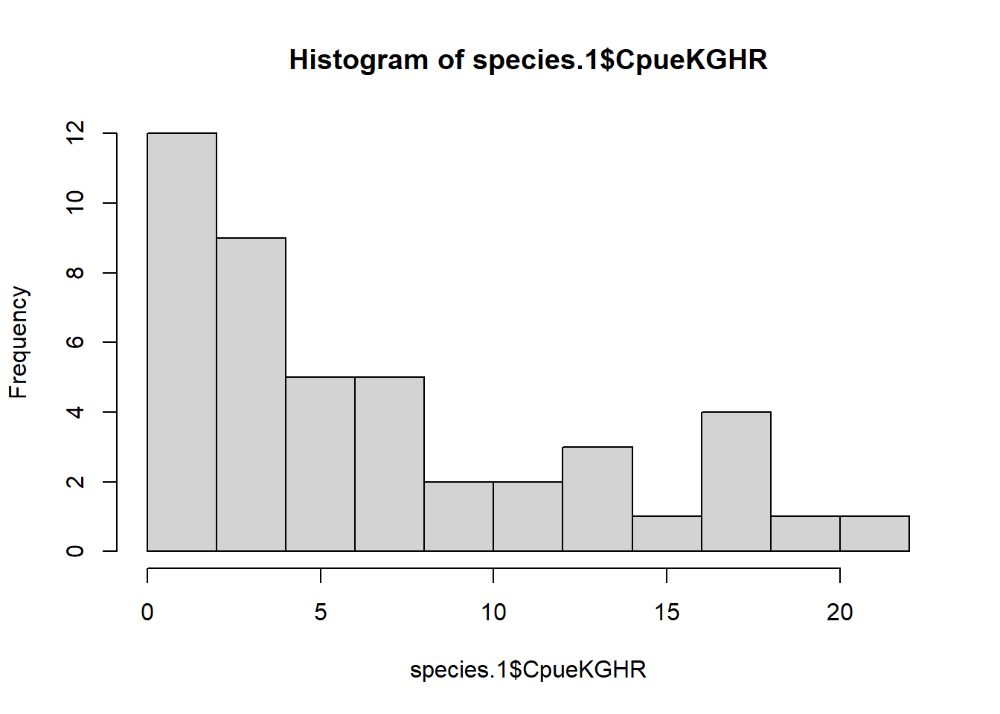
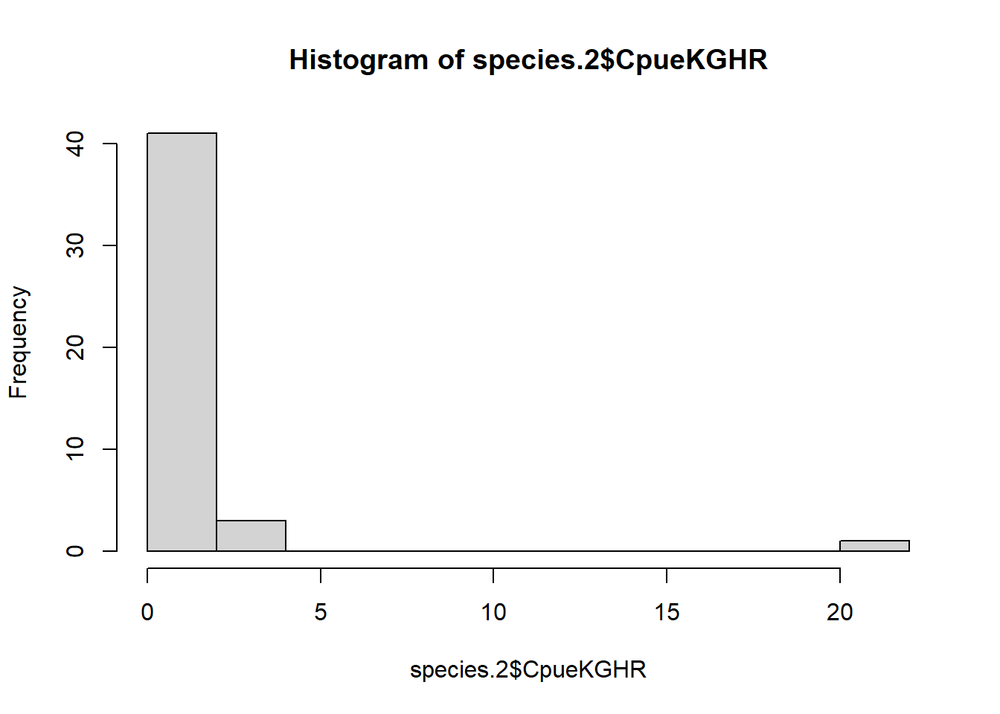
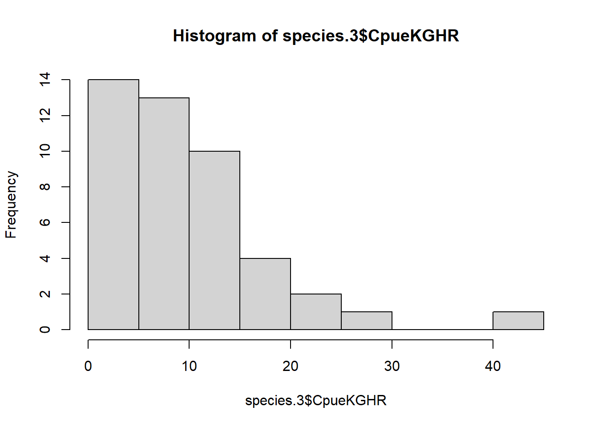
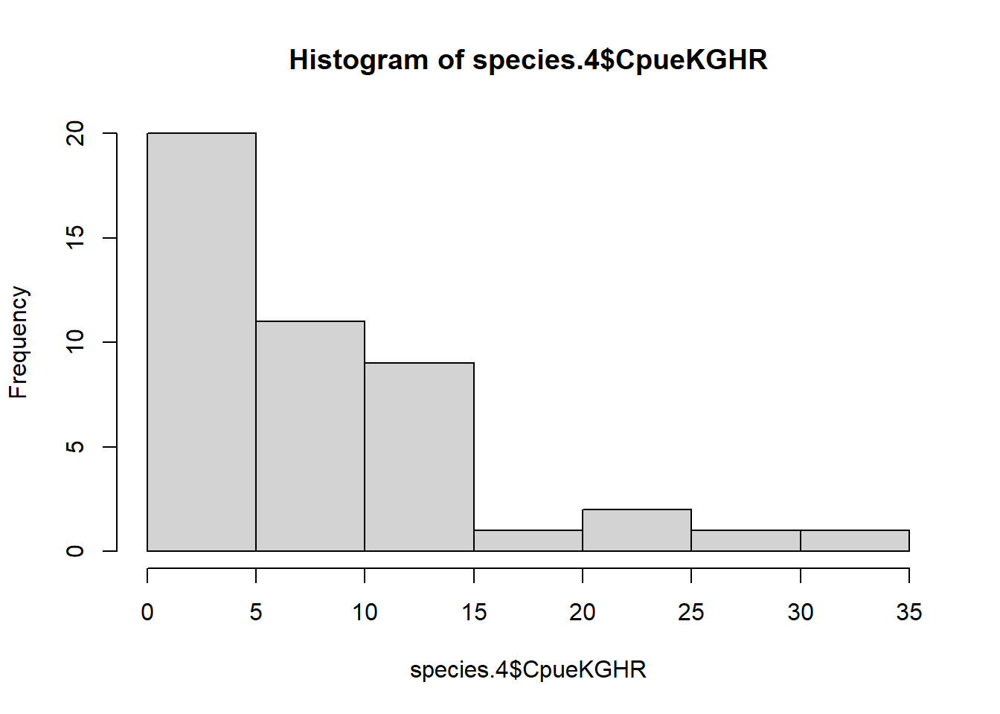
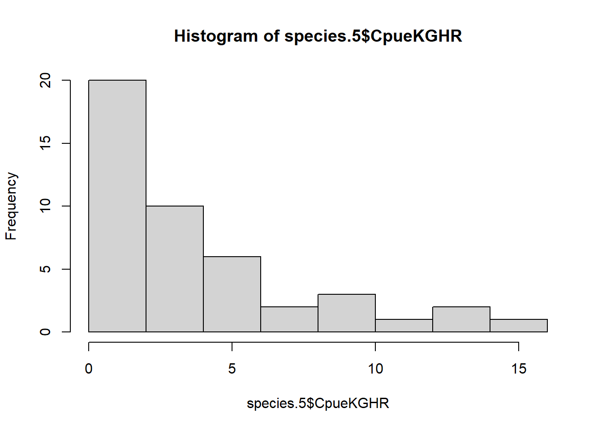
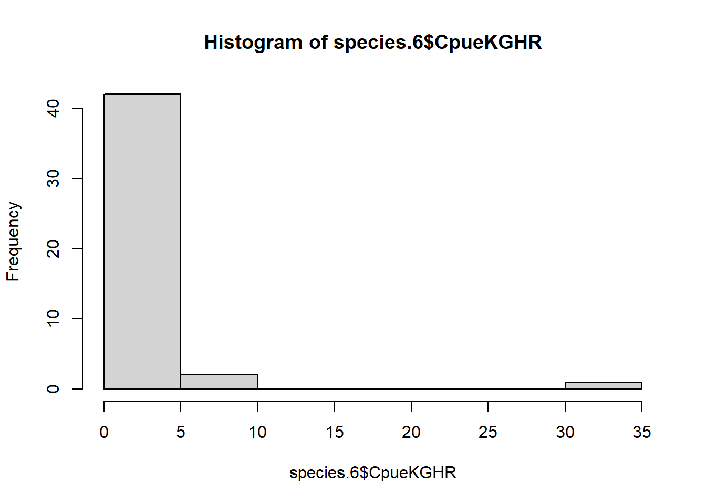
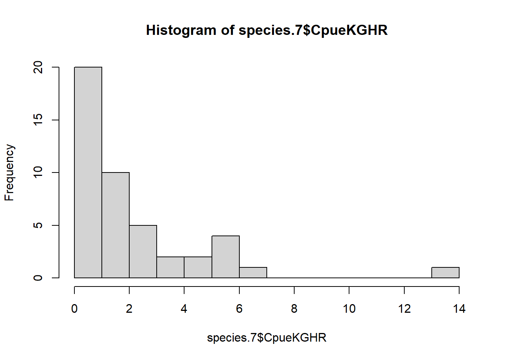
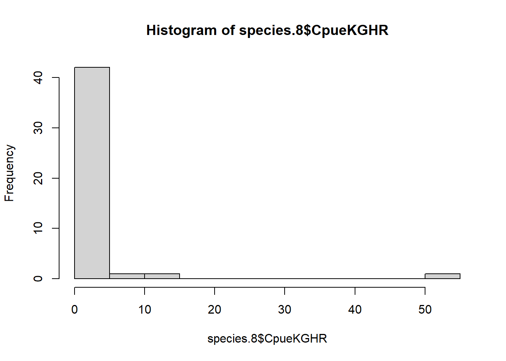
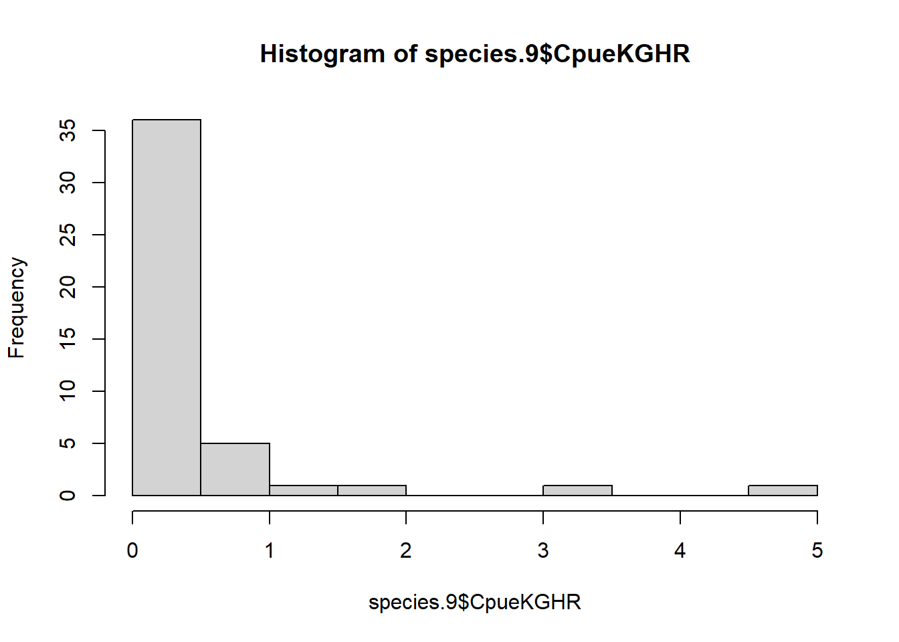
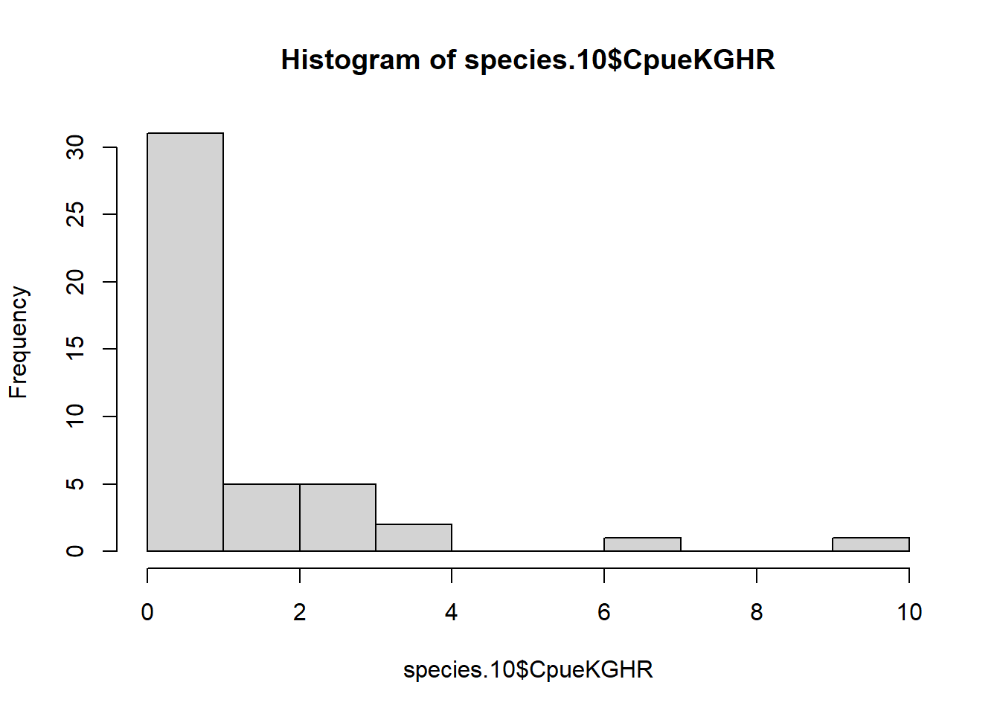

7 Best CPUE Models - Top 10 Bycatch Species
7.1 Data Modifications
# Names to remove
Remove <- c("Multiple species finfish", "Multiple species prawns", "Xiphopenaeus kroyeri")
# Data
Top10Species <- ObserverData %>%
group_by(LatinNames, CommonName) %>%
dplyr::summarise(NoSampled = n(),
.groups = 'drop') %>%
filter(NoSampled >= 10) %>%
filter(!LatinNames %in% Remove) %>%
arrange(desc(NoSampled)) %>%
head(10)
# Creating a vector of names
Top10names <- Top10Species$LatinNames
# Filtering data to keep species
FilteredSpecies <- ObserverData %>%
filter(LatinNames %in% Top10names) %>%
group_by(DragID2) %>%
mutate(PropWeight = CpueKGHR/sum(CpueKGHR)) %>%
ungroup() %>%
dplyr::select(LatinNames,
DragID2,
CpueKGHR,
Company,
Month,
TimePeriods,
FishingZones,
FishingDepthMtr)
# Converting variables to factors
factor.var <- c("Company",
"Month",
"TimePeriods",
"FishingZones")
FilteredSpecies[,factor.var] <- lapply(FilteredSpecies[,factor.var], factor)
# Removing fishing zones 2 and 5
drop.zones <- c(2, 5)
FilteredSpecies <- FilteredSpecies %>%
filter(!FishingZones %in% drop.zones) %>%
droplevels()7.2 CPUE Model Selection
7.2.1 Macrodon ancylodon
species.1 <- FilteredSpecies %>%
filter(LatinNames == Top10names[1]) %>%
# select(-DragID2) %>%
dplyr::select(-LatinNames)
# Histogram
hist(species.1$CpueKGHR, breaks = 10)
# Running models
# 2 Predictors
ma.an.1 <- glm(CpueKGHR ~ Month +
TimePeriods,
family = gaussian(link = "log"),
data = species.1)
summary(ma.an.1) # print summary
Call:
glm(formula = CpueKGHR ~ Month + TimePeriods, family = gaussian(link = "log"),
data = species.1)
Deviance Residuals:
Min 1Q Median 3Q Max
-6.065 -3.227 -1.739 2.925 10.639
Coefficients:
Estimate Std. Error t value Pr(>|t|)
(Intercept) 1.93552 0.23318 8.301 5.67e-10 ***
Month3 -0.36784 0.55453 -0.663 0.511224
Month4 -0.43286 0.53170 -0.814 0.420792
Month6 -0.18230 0.43663 -0.418 0.678718
Month8 0.04222 0.39118 0.108 0.914641
Month9 1.02178 0.25594 3.992 0.000298 ***
Month10 -0.04938 0.39700 -0.124 0.901681
TimePeriodsNight -0.23504 0.18816 -1.249 0.219444
---
Signif. codes: 0 '***' 0.001 '**' 0.01 '*' 0.05 '.' 0.1 ' ' 1
(Dispersion parameter for gaussian family taken to be 22.99185)
Null deviance: 1533.26 on 44 degrees of freedom
Residual deviance: 850.69 on 37 degrees of freedom
AIC: 277.98
Number of Fisher Scoring iterations: 8# 2 Predictors with 1 interaction term
ma.an.2 <- glm(CpueKGHR ~ Month +
TimePeriods +
Month*TimePeriods,
family = gaussian(link = "log"),
data = species.1)
summary(ma.an.2) # print summary
Call:
glm(formula = CpueKGHR ~ Month + TimePeriods + Month * TimePeriods,
family = gaussian(link = "log"), data = species.1)
Deviance Residuals:
Min 1Q Median 3Q Max
-6.9999 -2.4470 -0.3454 2.1825 9.4916
Coefficients:
Estimate Std. Error t value Pr(>|t|)
(Intercept) 2.06209 0.24741 8.335 2.05e-09 ***
Month3 -0.89133 1.07378 -0.830 0.4128
Month4 -0.61191 0.69098 -0.886 0.3827
Month6 -0.03011 0.43730 -0.069 0.9455
Month8 0.17007 0.38514 0.442 0.6619
Month9 0.71701 0.32400 2.213 0.0344 *
Month10 -0.01547 0.43299 -0.036 0.9717
TimePeriodsNight -0.60484 0.51615 -1.172 0.2502
Month3:TimePeriodsNight 1.06646 1.28349 0.831 0.4124
Month4:TimePeriodsNight 0.50092 1.09319 0.458 0.6500
Month6:TimePeriodsNight -0.63140 1.39190 -0.454 0.6533
Month8:TimePeriodsNight -1.07344 2.02555 -0.530 0.5999
Month9:TimePeriodsNight 0.70854 0.57783 1.226 0.2294
Month10:TimePeriodsNight -0.11718 0.96321 -0.122 0.9040
---
Signif. codes: 0 '***' 0.001 '**' 0.01 '*' 0.05 '.' 0.1 ' ' 1
(Dispersion parameter for gaussian family taken to be 22.70283)
Null deviance: 1533.26 on 44 degrees of freedom
Residual deviance: 703.79 on 31 degrees of freedom
AIC: 281.45
Number of Fisher Scoring iterations: 6# 3 Predictors
ma.an.3 <- glm(CpueKGHR ~ TimePeriods +
FishingDepthMtr +
FishingZones,
family = gaussian(link = "log"),
data = species.1)
summary(ma.an.3) # print summary
Call:
glm(formula = CpueKGHR ~ TimePeriods + FishingDepthMtr + FishingZones,
family = gaussian(link = "log"), data = species.1)
Deviance Residuals:
Min 1Q Median 3Q Max
-6.833 -4.432 -1.352 4.160 14.507
Coefficients:
Estimate Std. Error t value Pr(>|t|)
(Intercept) 3.11453 1.12101 2.778 0.00836 **
TimePeriodsNight -0.42926 0.26399 -1.626 0.11199
FishingDepthMtr -0.08333 0.05011 -1.663 0.10436
FishingZones6 0.28795 0.69318 0.415 0.68012
FishingZones7 0.80945 0.67992 1.191 0.24104
FishingZones8 0.01006 0.75752 0.013 0.98947
---
Signif. codes: 0 '***' 0.001 '**' 0.01 '*' 0.05 '.' 0.1 ' ' 1
(Dispersion parameter for gaussian family taken to be 32.68404)
Null deviance: 1533.3 on 44 degrees of freedom
Residual deviance: 1274.6 on 39 degrees of freedom
AIC: 292.17
Number of Fisher Scoring iterations: 8# 3 Predictors and 1 interaction term
ma.an.4 <- glm(CpueKGHR ~ FishingDepthMtr +
FishingZones +
TimePeriods +
TimePeriods*FishingZones, # Yields a low AIC
family = gaussian(link = "log"),
data = species.1)
summary(ma.an.4) # print summary
Call:
glm(formula = CpueKGHR ~ FishingDepthMtr + FishingZones + TimePeriods +
TimePeriods * FishingZones, family = gaussian(link = "log"),
data = species.1)
Deviance Residuals:
Min 1Q Median 3Q Max
-6.3768 -4.3827 -0.8561 3.6965 13.9049
Coefficients:
Estimate Std. Error t value Pr(>|t|)
(Intercept) 2.67734 1.57227 1.703 0.0972 .
FishingDepthMtr -0.08370 0.05073 -1.650 0.1076
FishingZones6 0.68423 1.31559 0.520 0.6062
FishingZones7 1.36536 1.31070 1.042 0.3045
FishingZones8 0.55520 1.37103 0.405 0.6879
TimePeriodsNight 0.46161 1.43950 0.321 0.7503
FishingZones6:TimePeriodsNight -0.75815 1.47455 -0.514 0.6103
FishingZones7:TimePeriodsNight -1.40848 1.63357 -0.862 0.3943
FishingZones8:TimePeriodsNight -1.19267 1.74643 -0.683 0.4990
---
Signif. codes: 0 '***' 0.001 '**' 0.01 '*' 0.05 '.' 0.1 ' ' 1
(Dispersion parameter for gaussian family taken to be 34.06671)
Null deviance: 1533.3 on 44 degrees of freedom
Residual deviance: 1226.4 on 36 degrees of freedom
AIC: 296.44
Number of Fisher Scoring iterations: 8# 3 Predictors with 2 interaction term
ma.an.5 <- glm(CpueKGHR ~ Month +
TimePeriods +
FishingDepthMtr +
Month*TimePeriods +
FishingDepthMtr*TimePeriods,
# FishingDepthMtr*Month, Gives some NA values
family = gaussian(link = "log"),
data = species.1)
summary(ma.an.5) # print summary
Call:
glm(formula = CpueKGHR ~ Month + TimePeriods + FishingDepthMtr +
Month * TimePeriods + FishingDepthMtr * TimePeriods, family = gaussian(link = "log"),
data = species.1)
Deviance Residuals:
Min 1Q Median 3Q Max
-6.2877 -2.2384 0.1245 1.6556 13.6451
Coefficients:
Estimate Std. Error t value Pr(>|t|)
(Intercept) 0.10827 1.70126 0.064 0.9497
Month3 -0.79638 1.07198 -0.743 0.4635
Month4 -0.70751 0.70807 -0.999 0.3260
Month6 0.05308 0.43959 0.121 0.9047
Month8 0.66870 0.59992 1.115 0.2742
Month9 1.32831 0.67751 1.961 0.0596 .
Month10 0.23996 0.72059 0.333 0.7415
TimePeriodsNight -9.32905 6.97549 -1.337 0.1915
FishingDepthMtr 0.10327 0.08315 1.242 0.2242
Month3:TimePeriodsNight 1.12597 1.33711 0.842 0.4066
Month4:TimePeriodsNight -1.07782 1.38872 -0.776 0.4440
Month6:TimePeriodsNight -0.41743 1.48246 -0.282 0.7803
Month8:TimePeriodsNight -0.01556 4.06154 -0.004 0.9970
Month9:TimePeriodsNight 3.17491 2.36311 1.344 0.1895
Month10:TimePeriodsNight 1.43226 2.22005 0.645 0.5239
TimePeriodsNight:FishingDepthMtr 0.48137 0.35771 1.346 0.1888
---
Signif. codes: 0 '***' 0.001 '**' 0.01 '*' 0.05 '.' 0.1 ' ' 1
(Dispersion parameter for gaussian family taken to be 22.11569)
Null deviance: 1533.26 on 44 degrees of freedom
Residual deviance: 641.28 on 29 degrees of freedom
AIC: 281.26
Number of Fisher Scoring iterations: 24# 2 Predictors
ma.an.1.log <- glm(log(CpueKGHR) ~ Month +
TimePeriods,
family = gaussian,
data = species.1)
summary(ma.an.1.log) # print summary
Call:
glm(formula = log(CpueKGHR) ~ Month + TimePeriods, family = gaussian,
data = species.1)
Deviance Residuals:
Min 1Q Median 3Q Max
-2.3178 -0.5220 0.0406 0.5072 1.8373
Coefficients:
Estimate Std. Error t value Pr(>|t|)
(Intercept) 1.3867 0.3269 4.242 0.000142 ***
Month3 0.2532 0.5357 0.473 0.639263
Month4 0.2098 0.5024 0.418 0.678697
Month6 0.3517 0.5024 0.700 0.488237
Month8 0.1530 0.5357 0.286 0.776759
Month9 1.8575 0.5357 3.468 0.001348 **
Month10 0.4298 0.5024 0.856 0.397739
TimePeriodsNight -0.6909 0.3016 -2.291 0.027764 *
---
Signif. codes: 0 '***' 0.001 '**' 0.01 '*' 0.05 '.' 0.1 ' ' 1
(Dispersion parameter for gaussian family taken to be 1.009563)
Null deviance: 54.813 on 44 degrees of freedom
Residual deviance: 37.354 on 37 degrees of freedom
AIC: 137.32
Number of Fisher Scoring iterations: 2# 2 Predictors with 1 interaction term
ma.an.2.log <- glm(log(CpueKGHR) ~ Month +
TimePeriods +
Month*TimePeriods,
family = gaussian,
data = species.1)
summary(ma.an.2.log) # print summary
Call:
glm(formula = log(CpueKGHR) ~ Month + TimePeriods + Month * TimePeriods,
family = gaussian, data = species.1)
Deviance Residuals:
Min 1Q Median 3Q Max
-2.11340 -0.47124 -0.05531 0.56739 2.04168
Coefficients:
Estimate Std. Error t value Pr(>|t|)
(Intercept) 1.59110 0.41324 3.850 0.000553 ***
Month3 -0.57335 0.82647 -0.694 0.493018
Month4 -0.26990 0.71575 -0.377 0.708672
Month6 0.41685 0.71575 0.582 0.564505
Month8 0.46087 0.71575 0.644 0.524373
Month9 1.18647 0.82647 1.436 0.161135
Month10 0.03585 0.71575 0.050 0.960378
TimePeriodsNight -1.09972 0.58440 -1.882 0.069284 .
Month3:TimePeriodsNight 1.44567 1.09332 1.322 0.195750
Month4:TimePeriodsNight 0.95934 1.01222 0.948 0.350582
Month6:TimePeriodsNight -0.13026 1.01222 -0.129 0.898437
Month8:TimePeriodsNight -0.87188 1.09332 -0.797 0.431249
Month9:TimePeriodsNight 1.18658 1.09332 1.085 0.286155
Month10:TimePeriodsNight 0.78796 1.01222 0.778 0.442203
---
Signif. codes: 0 '***' 0.001 '**' 0.01 '*' 0.05 '.' 0.1 ' ' 1
(Dispersion parameter for gaussian family taken to be 1.024584)
Null deviance: 54.813 on 44 degrees of freedom
Residual deviance: 31.762 on 31 degrees of freedom
AIC: 142.03
Number of Fisher Scoring iterations: 2# 3 Predictors
ma.an.3.log <- glm(log(CpueKGHR) ~ TimePeriods +
FishingDepthMtr +
FishingZones,
family = gaussian,
data = species.1)
summary(ma.an.3.log) # print summary
Call:
glm(formula = log(CpueKGHR) ~ TimePeriods + FishingDepthMtr +
FishingZones, family = gaussian, data = species.1)
Deviance Residuals:
Min 1Q Median 3Q Max
-2.24693 -0.64989 -0.03949 0.81847 1.81221
Coefficients:
Estimate Std. Error t value Pr(>|t|)
(Intercept) 3.83274 1.47151 2.605 0.0129 *
TimePeriodsNight -0.66552 0.33383 -1.994 0.0532 .
FishingDepthMtr -0.12267 0.07475 -1.641 0.1088
FishingZones6 -0.33420 0.61616 -0.542 0.5906
FishingZones7 0.56113 0.64399 0.871 0.3889
FishingZones8 0.02516 0.60007 0.042 0.9668
---
Signif. codes: 0 '***' 0.001 '**' 0.01 '*' 0.05 '.' 0.1 ' ' 1
(Dispersion parameter for gaussian family taken to be 1.199531)
Null deviance: 54.813 on 44 degrees of freedom
Residual deviance: 46.782 on 39 degrees of freedom
AIC: 143.45
Number of Fisher Scoring iterations: 2# 3 Predictors and 1 interaction term
ma.an.4.log <- glm(log(CpueKGHR) ~ FishingDepthMtr +
FishingZones +
TimePeriods +
TimePeriods*FishingZones, # Yields a low AIC
family = gaussian,
data = species.1)
summary(ma.an.4.log) # print summary
Call:
glm(formula = log(CpueKGHR) ~ FishingDepthMtr + FishingZones +
TimePeriods + TimePeriods * FishingZones, family = gaussian,
data = species.1)
Deviance Residuals:
Min 1Q Median 3Q Max
-2.22719 -0.56739 -0.01214 0.56739 1.83938
Coefficients:
Estimate Std. Error t value Pr(>|t|)
(Intercept) 3.50532 1.58836 2.207 0.0338 *
FishingDepthMtr -0.13820 0.07683 -1.799 0.0804 .
FishingZones6 0.17385 0.88986 0.195 0.8462
FishingZones7 1.54779 0.94914 1.631 0.1117
FishingZones8 0.63160 0.95766 0.660 0.5138
TimePeriodsNight 0.34595 1.00865 0.343 0.7336
FishingZones6:TimePeriodsNight -0.93238 1.11466 -0.836 0.4084
FishingZones7:TimePeriodsNight -1.94142 1.30206 -1.491 0.1447
FishingZones8:TimePeriodsNight -1.01591 1.23594 -0.822 0.4165
---
Signif. codes: 0 '***' 0.001 '**' 0.01 '*' 0.05 '.' 0.1 ' ' 1
(Dispersion parameter for gaussian family taken to be 1.220855)
Null deviance: 54.813 on 44 degrees of freedom
Residual deviance: 43.951 on 36 degrees of freedom
AIC: 146.64
Number of Fisher Scoring iterations: 2# 3 Predictors with 2 interaction term
ma.an.5.log <- glm(log(CpueKGHR) ~ Month +
TimePeriods +
FishingDepthMtr +
Month*TimePeriods +
FishingDepthMtr*TimePeriods,
# FishingDepthMtr*Month, Gives some NA values
family = gaussian,
data = species.1)
summary(ma.an.5.log)
Call:
glm(formula = log(CpueKGHR) ~ Month + TimePeriods + FishingDepthMtr +
Month * TimePeriods + FishingDepthMtr * TimePeriods, family = gaussian,
data = species.1)
Deviance Residuals:
Min 1Q Median 3Q Max
-2.11340 -0.50639 0.02958 0.42504 1.78609
Coefficients:
Estimate Std. Error t value Pr(>|t|)
(Intercept) 0.39314 2.22200 0.177 0.861
Month3 -0.49073 0.85132 -0.576 0.569
Month4 -0.22859 0.72954 -0.313 0.756
Month6 0.49947 0.74109 0.674 0.506
Month8 0.77069 0.91927 0.838 0.409
Month9 1.57891 1.10140 1.434 0.162
Month10 0.42828 1.01861 0.420 0.677
TimePeriodsNight -2.20213 3.35848 -0.656 0.517
FishingDepthMtr 0.06196 0.11287 0.549 0.587
Month3:TimePeriodsNight 1.36305 1.11862 1.219 0.233
Month4:TimePeriodsNight 0.83283 1.03308 0.806 0.427
Month6:TimePeriodsNight -0.12768 1.04127 -0.123 0.903
Month8:TimePeriodsNight -0.67051 1.36076 -0.493 0.626
Month9:TimePeriodsNight 1.43314 1.48845 0.963 0.344
Month10:TimePeriodsNight 1.29012 1.58011 0.816 0.421
TimePeriodsNight:FishingDepthMtr 0.06583 0.17825 0.369 0.715
(Dispersion parameter for gaussian family taken to be 1.053137)
Null deviance: 54.813 on 44 degrees of freedom
Residual deviance: 30.541 on 29 degrees of freedom
AIC: 144.26
Number of Fisher Scoring iterations: 27.2.1.1 Model Comparison
rcompanion::compareGLM(ma.an.1,
ma.an.2,
ma.an.3,
ma.an.4,
ma.an.5,
ma.an.1.log,
ma.an.2.log,
ma.an.3.log,
ma.an.4.log,
ma.an.5.log) $Models
Formula
1 "CpueKGHR ~ Month + TimePeriods"
2 "CpueKGHR ~ Month + TimePeriods + Month * TimePeriods"
3 "CpueKGHR ~ TimePeriods + FishingDepthMtr + FishingZones"
4 "CpueKGHR ~ FishingDepthMtr + FishingZones + TimePeriods + TimePeriods * FishingZones"
5 "CpueKGHR ~ Month + TimePeriods + FishingDepthMtr + Month * TimePeriods + FishingDepthMtr * TimePeriods"
6 "log(CpueKGHR) ~ Month + TimePeriods"
7 "log(CpueKGHR) ~ Month + TimePeriods + Month * TimePeriods"
8 "log(CpueKGHR) ~ TimePeriods + FishingDepthMtr + FishingZones"
9 "log(CpueKGHR) ~ FishingDepthMtr + FishingZones + TimePeriods + TimePeriods * FishingZones"
10 "log(CpueKGHR) ~ Month + TimePeriods + FishingDepthMtr + Month * TimePeriods + FishingDepthMtr * TimePeriods"
$Fit.criteria
Rank Df.res AIC AICc BIC McFadden Cox.and.Snell Nagelkerke p.value
1 8 37 278.0 283.1 294.2 0.09253 0.4452 0.4459 1.967e-143
2 14 31 281.4 298.0 308.5 0.12230 0.5410 0.5419 3.316e-169
3 6 39 292.2 295.2 304.8 0.02902 0.1687 0.1690 3.858e-54
4 9 36 296.4 302.9 314.5 0.03508 0.2001 0.2005 6.977e-62
5 16 29 281.3 303.9 312.0 0.13690 0.5818 0.5828 9.046e-181
6 8 37 137.3 142.5 153.6 0.12640 0.3185 0.3346 5.478e-03
7 14 31 142.0 158.6 169.1 0.17980 0.4205 0.4418 1.184e-02
8 6 39 143.5 146.5 156.1 0.05220 0.1465 0.1539 5.457e-02
9 9 36 146.6 153.1 164.7 0.07277 0.1982 0.2082 5.845e-02
10 16 29 144.3 166.9 175.0 0.19270 0.4428 0.4652 1.595e-027.2.2 Callinectes ornatus
species.2 <- FilteredSpecies %>%
filter(LatinNames == Top10names[2]) %>%
dplyr::select(-LatinNames)
# Histogram
hist(species.2$CpueKGHR, breaks = 10)
# Running models
# 2 Predictors
ca.or.1 <- glm(CpueKGHR ~ Month +
TimePeriods,
family = gaussian(link = "log"),
data = species.2)
summary(ca.or.1) # print summary
Call:
glm(formula = CpueKGHR ~ Month + TimePeriods, family = gaussian(link = "log"),
data = species.2)
Deviance Residuals:
Min 1Q Median 3Q Max
-7.3231 -0.2400 0.0618 0.4159 14.3069
Coefficients:
Estimate Std. Error t value Pr(>|t|)
(Intercept) -3.09121 4.49769 -0.687 0.496
Month3 3.25566 4.18009 0.779 0.441
Month4 0.77007 4.98916 0.154 0.878
Month6 1.66927 4.31950 0.386 0.701
Month8 0.68350 5.53089 0.124 0.902
Month9 0.97172 4.73881 0.205 0.839
Month10 0.07501 6.88600 0.011 0.991
TimePeriodsNight 1.84484 1.71776 1.074 0.290
(Dispersion parameter for gaussian family taken to be 8.867203)
Null deviance: 458.25 on 44 degrees of freedom
Residual deviance: 328.07 on 37 degrees of freedom
AIC: 235.1
Number of Fisher Scoring iterations: 10# 2 Predictors with 1 interaction term
ca.or.2 <- glm(CpueKGHR ~ Month +
TimePeriods +
Month*TimePeriods,
family = gaussian(link = "log"),
data = species.2)
summary(ca.or.2) # print summary
Call:
glm(formula = CpueKGHR ~ Month + TimePeriods + Month * TimePeriods,
family = gaussian(link = "log"), data = species.2)
Deviance Residuals:
Min 1Q Median 3Q Max
-7.3793 -0.3610 -0.0960 0.2272 14.2507
Coefficients:
Estimate Std. Error t value Pr(>|t|)
(Intercept) -0.39550 1.94520 -0.203 0.840
Month3 -0.04347 4.02075 -0.011 0.991
Month4 0.36189 2.73010 0.133 0.895
Month6 0.57156 2.48929 0.230 0.820
Month8 -0.81165 6.49233 -0.125 0.901
Month9 -1.30345 12.55685 -0.104 0.918
Month10 -0.22683 3.96179 -0.057 0.955
TimePeriodsNight -1.27437 7.22377 -0.176 0.861
Month3:TimePeriodsNight 3.73017 8.03905 0.464 0.646
Month4:TimePeriodsNight 0.58172 8.39742 0.069 0.945
Month6:TimePeriodsNight 1.41749 7.51052 0.189 0.852
Month8:TimePeriodsNight 1.82760 10.46818 0.175 0.863
Month9:TimePeriodsNight 2.68993 14.56438 0.185 0.855
Month10:TimePeriodsNight 0.43928 11.28652 0.039 0.969
(Dispersion parameter for gaussian family taken to be 10.29322)
Null deviance: 458.25 on 44 degrees of freedom
Residual deviance: 319.09 on 31 degrees of freedom
AIC: 245.85
Number of Fisher Scoring iterations: 6# 3 Predictors
ca.or.3 <- glm(CpueKGHR ~ TimePeriods +
FishingDepthMtr +
FishingZones,
family = gaussian(link = "log"),
data = species.2)
summary(ca.or.3) # print summary
Call:
glm(formula = CpueKGHR ~ TimePeriods + FishingDepthMtr + FishingZones,
family = gaussian(link = "log"), data = species.2)
Deviance Residuals:
Min 1Q Median 3Q Max
-7.3177 -0.3467 0.0152 0.4238 14.3123
Coefficients:
Estimate Std. Error t value Pr(>|t|)
(Intercept) 0.66680 7.68220 0.087 0.9313
TimePeriodsNight 1.81567 1.65426 1.098 0.2791
FishingDepthMtr -0.02633 0.41683 -0.063 0.9500
FishingZones6 -2.83832 2.61922 -1.084 0.2852
FishingZones7 -3.37085 6.54669 -0.515 0.6095
FishingZones8 -1.93583 1.11675 -1.733 0.0909 .
---
Signif. codes: 0 '***' 0.001 '**' 0.01 '*' 0.05 '.' 0.1 ' ' 1
(Dispersion parameter for gaussian family taken to be 8.454917)
Null deviance: 458.25 on 44 degrees of freedom
Residual deviance: 329.73 on 39 degrees of freedom
AIC: 231.33
Number of Fisher Scoring iterations: 10# 3 Predictors and 1 interaction term
ca.or.4 <- glm(CpueKGHR ~ FishingDepthMtr +
FishingZones +
TimePeriods +
TimePeriods*FishingZones, # Yields a low AIC
family = gaussian(link = "log"),
data = species.2)
summary(ca.or.4) # print summary
Call:
glm(formula = CpueKGHR ~ FishingDepthMtr + FishingZones + TimePeriods +
TimePeriods * FishingZones, family = gaussian(link = "log"),
data = species.2)
Deviance Residuals:
Min 1Q Median 3Q Max
-7.3793 -0.3199 -0.1753 0.1147 14.2507
Coefficients:
Estimate Std. Error t value Pr(>|t|)
(Intercept) 0.60232 6.98445 0.086 0.932
FishingDepthMtr -0.05785 0.34301 -0.169 0.867
FishingZones6 -0.55194 4.06042 -0.136 0.893
FishingZones7 -0.38920 4.89844 -0.079 0.937
FishingZones8 0.84901 3.41197 0.249 0.805
TimePeriodsNight 2.45579 3.27315 0.750 0.458
FishingZones6:TimePeriodsNight -2.58922 4.36201 -0.594 0.557
FishingZones7:TimePeriodsNight -3.39165 11.48150 -0.295 0.769
FishingZones8:TimePeriodsNight -2.95799 3.65633 -0.809 0.424
(Dispersion parameter for gaussian family taken to be 8.862259)
Null deviance: 458.25 on 44 degrees of freedom
Residual deviance: 319.03 on 36 degrees of freedom
AIC: 235.84
Number of Fisher Scoring iterations: 8# 3 Predictors with 2 interaction term
ca.or.5 <- glm(CpueKGHR ~ Month +
TimePeriods +
FishingDepthMtr +
Month*TimePeriods +
FishingDepthMtr*TimePeriods,
# FishingDepthMtr*Month, Gives some NA values
family = gaussian(link = "log"),
data = species.2)
summary(ca.or.5) # print summary
Call:
glm(formula = CpueKGHR ~ Month + TimePeriods + FishingDepthMtr +
Month * TimePeriods + FishingDepthMtr * TimePeriods, family = gaussian(link = "log"),
data = species.2)
Deviance Residuals:
Min 1Q Median 3Q Max
-7.3793 -0.2093 0.0219 0.2878 14.2507
Coefficients:
Estimate Std. Error t value Pr(>|t|)
(Intercept) 3.76346 11.51365 0.327 0.746
Month3 0.05527 4.34016 0.013 0.990
Month4 0.64093 2.81224 0.228 0.821
Month6 0.61067 2.80195 0.218 0.829
Month8 -1.50634 6.50307 -0.232 0.818
Month9 -2.38740 13.29393 -0.180 0.859
Month10 -2.03860 7.26598 -0.281 0.781
TimePeriodsNight -20.31059 74.67950 -0.272 0.788
FishingDepthMtr -0.23654 0.64774 -0.365 0.718
Month3:TimePeriodsNight 4.85861 14.16931 0.343 0.734
Month4:TimePeriodsNight -1.66960 17.03617 -0.098 0.923
Month6:TimePeriodsNight 2.96078 13.90292 0.213 0.833
Month8:TimePeriodsNight 5.51194 24.56428 0.224 0.824
Month9:TimePeriodsNight 8.79276 30.59726 0.287 0.776
Month10:TimePeriodsNight 5.37292 30.41958 0.177 0.861
TimePeriodsNight:FishingDepthMtr 0.99488 3.75789 0.265 0.793
(Dispersion parameter for gaussian family taken to be 10.90567)
Null deviance: 458.25 on 44 degrees of freedom
Residual deviance: 316.24 on 29 degrees of freedom
AIC: 249.45
Number of Fisher Scoring iterations: 18# 2 Predictors
ca.or.1.log <- glm(log(CpueKGHR) ~ Month +
TimePeriods,
family = gaussian,
data = species.2)
summary(ca.or.1.log) # print summary
Call:
glm(formula = log(CpueKGHR) ~ Month + TimePeriods, family = gaussian,
data = species.2)
Deviance Residuals:
Min 1Q Median 3Q Max
-3.4371 -0.5703 -0.1704 0.7234 3.2343
Coefficients:
Estimate Std. Error t value Pr(>|t|)
(Intercept) -1.6354 0.4407 -3.711 0.000675 ***
Month3 1.7072 0.7221 2.364 0.023430 *
Month4 0.9562 0.6772 1.412 0.166317
Month6 1.6418 0.6772 2.424 0.020343 *
Month8 0.3547 0.7221 0.491 0.626208
Month9 0.4288 0.7221 0.594 0.556234
Month10 0.5855 0.6772 0.864 0.392885
TimePeriodsNight -0.2257 0.4065 -0.555 0.582040
---
Signif. codes: 0 '***' 0.001 '**' 0.01 '*' 0.05 '.' 0.1 ' ' 1
(Dispersion parameter for gaussian family taken to be 1.834543)
Null deviance: 85.917 on 44 degrees of freedom
Residual deviance: 67.878 on 37 degrees of freedom
AIC: 164.2
Number of Fisher Scoring iterations: 2# 2 Predictors with 1 interaction term
ca.or.2.log <- glm(log(CpueKGHR) ~ Month +
TimePeriods +
Month*TimePeriods,
family = gaussian,
data = species.2)
summary(ca.or.2.log) # print summary
Call:
glm(formula = log(CpueKGHR) ~ Month + TimePeriods + Month * TimePeriods,
family = gaussian, data = species.2)
Deviance Residuals:
Min 1Q Median 3Q Max
-2.8578 -0.7378 -0.0197 0.7060 2.8682
Coefficients:
Estimate Std. Error t value Pr(>|t|)
(Intercept) -1.0561 0.5565 -1.898 0.0671 .
Month3 0.5788 1.1129 0.520 0.6067
Month4 0.2741 0.9638 0.284 0.7780
Month6 1.1350 0.9638 1.178 0.2479
Month8 -0.5070 0.9638 -0.526 0.6026
Month9 -1.2651 1.1129 -1.137 0.2644
Month10 0.2693 0.9638 0.279 0.7818
TimePeriodsNight -1.3843 0.7870 -1.759 0.0884 .
Month3:TimePeriodsNight 2.0738 1.4723 1.409 0.1689
Month4:TimePeriodsNight 1.3642 1.3631 1.001 0.3247
Month6:TimePeriodsNight 1.0135 1.3631 0.744 0.4627
Month8:TimePeriodsNight 1.8644 1.4723 1.266 0.2148
Month9:TimePeriodsNight 3.0163 1.4723 2.049 0.0490 *
Month10:TimePeriodsNight 0.6322 1.3631 0.464 0.6460
---
Signif. codes: 0 '***' 0.001 '**' 0.01 '*' 0.05 '.' 0.1 ' ' 1
(Dispersion parameter for gaussian family taken to be 1.857936)
Null deviance: 85.917 on 44 degrees of freedom
Residual deviance: 57.596 on 31 degrees of freedom
AIC: 168.81
Number of Fisher Scoring iterations: 2# 3 Predictors
ca.or.3.log <- glm(log(CpueKGHR) ~ TimePeriods +
FishingDepthMtr +
FishingZones,
family = gaussian,
data = species.2)
summary(ca.or.3.log) # print summary
Call:
glm(formula = log(CpueKGHR) ~ TimePeriods + FishingDepthMtr +
FishingZones, family = gaussian, data = species.2)
Deviance Residuals:
Min 1Q Median 3Q Max
-3.2405 -0.5546 -0.1028 0.6632 3.3050
Coefficients:
Estimate Std. Error t value Pr(>|t|)
(Intercept) 1.89349 1.73396 1.092 0.2815
TimePeriodsNight -0.40241 0.39337 -1.023 0.3126
FishingDepthMtr -0.09532 0.08809 -1.082 0.2858
FishingZones6 -1.83317 0.72606 -2.525 0.0158 *
FishingZones7 -1.32759 0.75885 -1.749 0.0881 .
FishingZones8 -0.16977 0.70709 -0.240 0.8115
---
Signif. codes: 0 '***' 0.001 '**' 0.01 '*' 0.05 '.' 0.1 ' ' 1
(Dispersion parameter for gaussian family taken to be 1.66557)
Null deviance: 85.917 on 44 degrees of freedom
Residual deviance: 64.957 on 39 degrees of freedom
AIC: 158.22
Number of Fisher Scoring iterations: 2# 3 Predictors and 1 interaction term
ca.or.4.log <- glm(log(CpueKGHR) ~ FishingDepthMtr +
FishingZones +
TimePeriods +
TimePeriods*FishingZones, # Yields a low AIC
family = gaussian,
data = species.2)
summary(ca.or.4.log) # print summary
Call:
glm(formula = log(CpueKGHR) ~ FishingDepthMtr + FishingZones +
TimePeriods + TimePeriods * FishingZones, family = gaussian,
data = species.2)
Deviance Residuals:
Min 1Q Median 3Q Max
-3.2657 -0.6268 -0.0312 0.5620 2.8682
Coefficients:
Estimate Std. Error t value Pr(>|t|)
(Intercept) 1.33636 1.89664 0.705 0.486
FishingDepthMtr -0.10076 0.09174 -1.098 0.279
FishingZones6 -1.24485 1.06257 -1.172 0.249
FishingZones7 -0.47272 1.13336 -0.417 0.679
FishingZones8 0.71159 1.14353 0.622 0.538
TimePeriodsNight 0.68948 1.20441 0.572 0.571
FishingZones6:TimePeriodsNight -0.99984 1.33100 -0.751 0.457
FishingZones7:TimePeriodsNight -1.59550 1.55477 -1.026 0.312
FishingZones8:TimePeriodsNight -1.47074 1.47581 -0.997 0.326
(Dispersion parameter for gaussian family taken to be 1.740734)
Null deviance: 85.917 on 44 degrees of freedom
Residual deviance: 62.666 on 36 degrees of freedom
AIC: 162.61
Number of Fisher Scoring iterations: 2# 3 Predictors with 2 interaction term
ca.or.5.log <- glm(log(CpueKGHR) ~ Month +
TimePeriods +
FishingDepthMtr +
Month*TimePeriods +
FishingDepthMtr*TimePeriods,
# FishingDepthMtr*Month, Gives some NA values
family = gaussian,
data = species.2)
summary(ca.or.5.log) # print summary
Call:
glm(formula = log(CpueKGHR) ~ Month + TimePeriods + FishingDepthMtr +
Month * TimePeriods + FishingDepthMtr * TimePeriods, family = gaussian,
data = species.2)
Deviance Residuals:
Min 1Q Median 3Q Max
-2.85784 -0.65364 -0.06841 0.88487 2.86821
Coefficients:
Estimate Std. Error t value Pr(>|t|)
(Intercept) 0.67328 3.03304 0.222 0.8259
Month3 0.45948 1.16205 0.395 0.6954
Month4 0.21449 0.99583 0.215 0.8310
Month6 1.01575 1.01159 1.004 0.3236
Month8 -0.95422 1.25481 -0.760 0.4531
Month9 -1.83166 1.50342 -1.218 0.2329
Month10 -0.29719 1.39041 -0.214 0.8322
TimePeriodsNight -2.69913 4.58434 -0.589 0.5606
FishingDepthMtr -0.08945 0.15407 -0.581 0.5660
Month3:TimePeriodsNight 2.19309 1.52692 1.436 0.1616
Month4:TimePeriodsNight 1.43917 1.41016 1.021 0.3159
Month6:TimePeriodsNight 1.11742 1.42134 0.786 0.4381
Month8:TimePeriodsNight 2.21957 1.85745 1.195 0.2418
Month9:TimePeriodsNight 3.46769 2.03174 1.707 0.0986 .
Month10:TimePeriodsNight 1.03753 2.15685 0.481 0.6341
TimePeriodsNight:FishingDepthMtr 0.06642 0.24331 0.273 0.7868
---
Signif. codes: 0 '***' 0.001 '**' 0.01 '*' 0.05 '.' 0.1 ' ' 1
(Dispersion parameter for gaussian family taken to be 1.962248)
Null deviance: 85.917 on 44 degrees of freedom
Residual deviance: 56.905 on 29 degrees of freedom
AIC: 172.27
Number of Fisher Scoring iterations: 27.2.2.1 Model Comparison
rcompanion::compareGLM(ca.or.1,
ca.or.2,
ca.or.3,
ca.or.4,
ca.or.5,
ca.or.1.log,
ca.or.2.log,
ca.or.3.log,
ca.or.4.log,
ca.or.5.log) $Models
Formula
1 "CpueKGHR ~ Month + TimePeriods"
2 "CpueKGHR ~ Month + TimePeriods + Month * TimePeriods"
3 "CpueKGHR ~ TimePeriods + FishingDepthMtr + FishingZones"
4 "CpueKGHR ~ FishingDepthMtr + FishingZones + TimePeriods + TimePeriods * FishingZones"
5 "CpueKGHR ~ Month + TimePeriods + FishingDepthMtr + Month * TimePeriods + FishingDepthMtr * TimePeriods"
6 "log(CpueKGHR) ~ Month + TimePeriods"
7 "log(CpueKGHR) ~ Month + TimePeriods + Month * TimePeriods"
8 "log(CpueKGHR) ~ TimePeriods + FishingDepthMtr + FishingZones"
9 "log(CpueKGHR) ~ FishingDepthMtr + FishingZones + TimePeriods + TimePeriods * FishingZones"
10 "log(CpueKGHR) ~ Month + TimePeriods + FishingDepthMtr + Month * TimePeriods + FishingDepthMtr * TimePeriods"
$Fit.criteria
Rank Df.res AIC AICc BIC McFadden Cox.and.Snell Nagelkerke p.value
1 8 37 235.1 240.2 251.4 0.06478 0.2841 0.2857 2.769e-25
2 14 31 245.9 262.4 273.0 0.07017 0.3037 0.3054 1.426e-23
3 6 39 231.3 234.4 244.0 0.06381 0.2805 0.2821 2.391e-26
4 9 36 235.8 242.3 253.9 0.07020 0.3038 0.3056 1.649e-26
5 16 29 249.4 272.1 280.2 0.07190 0.3099 0.3117 4.200e-23
6 8 37 164.2 169.3 180.5 0.06763 0.2100 0.2166 4.448e-03
7 14 31 168.8 185.4 195.9 0.11480 0.3296 0.3401 2.635e-03
8 6 39 158.2 161.2 170.9 0.08026 0.2440 0.2517 3.584e-04
9 9 36 162.6 169.1 180.7 0.09056 0.2706 0.2792 1.170e-03
10 16 29 172.3 194.9 203.0 0.11820 0.3377 0.3484 4.753e-037.2.3 Stellifer rastrifer
species.3 <- FilteredSpecies %>%
filter(LatinNames == Top10names[3]) %>%
dplyr::select(-LatinNames)
# Histogram
hist(species.3$CpueKGHR, breaks = 10)
# Running models
# 2 Predictors
st.ra.1 <- glm(CpueKGHR ~ Month +
TimePeriods,
family = gaussian(link = "log"),
data = species.3)
summary(st.ra.1) # print summary
Call:
glm(formula = CpueKGHR ~ Month + TimePeriods, family = gaussian(link = "log"),
data = species.3)
Deviance Residuals:
Min 1Q Median 3Q Max
-11.6534 -4.9856 -0.8956 3.4936 23.9522
Coefficients:
Estimate Std. Error t value Pr(>|t|)
(Intercept) 2.37333 0.26217 9.052 6.44e-11 ***
Month3 0.46225 0.35644 1.297 0.203
Month4 0.18586 0.38564 0.482 0.633
Month6 -1.30678 1.32992 -0.983 0.332
Month8 0.25072 0.38448 0.652 0.518
Month9 0.39987 0.36816 1.086 0.284
Month10 -0.09802 0.46327 -0.212 0.834
TimePeriodsNight -0.36593 0.24291 -1.506 0.140
---
Signif. codes: 0 '***' 0.001 '**' 0.01 '*' 0.05 '.' 0.1 ' ' 1
(Dispersion parameter for gaussian family taken to be 63.99259)
Null deviance: 2975.9 on 44 degrees of freedom
Residual deviance: 2367.8 on 37 degrees of freedom
AIC: 324.04
Number of Fisher Scoring iterations: 12# 2 Predictors with 1 interaction term
st.ra.2 <- glm(CpueKGHR ~ Month +
TimePeriods +
Month*TimePeriods,
family = gaussian(link = "log"),
data = species.3)
summary(st.ra.2) # print summary
Call:
glm(formula = CpueKGHR ~ Month + TimePeriods + Month * TimePeriods,
family = gaussian(link = "log"), data = species.3)
Deviance Residuals:
Min 1Q Median 3Q Max
-13.3190 -3.4560 0.1239 3.4560 13.3190
Coefficients:
Estimate Std. Error t value Pr(>|t|)
(Intercept) 2.28246 0.27192 8.394 1.76e-09 ***
Month3 1.03801 0.31900 3.254 0.00275 **
Month4 -0.13430 0.51710 -0.260 0.79679
Month6 -1.80416 2.35189 -0.767 0.44882
Month8 0.47574 0.36201 1.314 0.19843
Month9 -0.10260 0.58846 -0.174 0.86273
Month10 0.07832 0.44764 0.175 0.86225
TimePeriodsNight -0.10905 0.40731 -0.268 0.79069
Month3:TimePeriodsNight -2.74363 2.40146 -1.142 0.26200
Month4:TimePeriodsNight 0.68520 0.64843 1.057 0.29881
Month6:TimePeriodsNight 0.98607 2.56279 0.385 0.70304
Month8:TimePeriodsNight -0.98472 0.99324 -0.991 0.32916
Month9:TimePeriodsNight 0.81906 0.69436 1.180 0.24714
Month10:TimePeriodsNight -0.54758 0.87320 -0.627 0.53519
---
Signif. codes: 0 '***' 0.001 '**' 0.01 '*' 0.05 '.' 0.1 ' ' 1
(Dispersion parameter for gaussian family taken to be 42.61468)
Null deviance: 2975.9 on 44 degrees of freedom
Residual deviance: 1321.1 on 31 degrees of freedom
AIC: 309.78
Number of Fisher Scoring iterations: 6# 3 Predictors
st.ra.3 <- glm(CpueKGHR ~ TimePeriods +
FishingDepthMtr +
FishingZones,
family = gaussian(link = "log"),
data = species.3)
summary(st.ra.3) # print summary
Call:
glm(formula = CpueKGHR ~ TimePeriods + FishingDepthMtr + FishingZones,
family = gaussian(link = "log"), data = species.3)
Deviance Residuals:
Min 1Q Median 3Q Max
-10.985 -5.110 -1.285 2.300 21.528
Coefficients:
Estimate Std. Error t value Pr(>|t|)
(Intercept) 4.47781 1.05709 4.236 0.000134 ***
TimePeriodsNight -0.55718 0.26951 -2.067 0.045378 *
FishingDepthMtr -0.08385 0.05616 -1.493 0.143520
FishingZones6 -0.80071 0.40404 -1.982 0.054587 .
FishingZones7 -0.27128 0.37733 -0.719 0.476454
FishingZones8 -0.98563 0.50026 -1.970 0.055940 .
---
Signif. codes: 0 '***' 0.001 '**' 0.01 '*' 0.05 '.' 0.1 ' ' 1
(Dispersion parameter for gaussian family taken to be 65.93052)
Null deviance: 2975.9 on 44 degrees of freedom
Residual deviance: 2571.1 on 39 degrees of freedom
AIC: 323.75
Number of Fisher Scoring iterations: 12# 3 Predictors and 1 interaction term
st.ra.4 <- glm(CpueKGHR ~ FishingDepthMtr +
FishingZones +
TimePeriods +
TimePeriods*FishingZones, # Yields a low AIC
family = gaussian(link = "log"),
data = species.3)
summary(st.ra.4) # print summary
Call:
glm(formula = CpueKGHR ~ FishingDepthMtr + FishingZones + TimePeriods +
TimePeriods * FishingZones, family = gaussian(link = "log"),
data = species.3)
Deviance Residuals:
Min 1Q Median 3Q Max
-13.3190 -4.0760 -0.7375 2.8876 16.7795
Coefficients:
Estimate Std. Error t value Pr(>|t|)
(Intercept) 4.39256 0.90712 4.842 2.43e-05 ***
FishingDepthMtr -0.05956 0.04934 -1.207 0.23524
FishingZones6 -1.14579 0.34120 -3.358 0.00186 **
FishingZones7 -0.75612 0.36596 -2.066 0.04607 *
FishingZones8 -2.06385 1.00768 -2.048 0.04789 *
TimePeriodsNight -2.85268 2.62220 -1.088 0.28387
FishingZones6:TimePeriodsNight 2.64230 2.64022 1.001 0.32361
FishingZones7:TimePeriodsNight 2.63345 2.67246 0.985 0.33100
FishingZones8:TimePeriodsNight 3.80535 2.82105 1.349 0.18579
---
Signif. codes: 0 '***' 0.001 '**' 0.01 '*' 0.05 '.' 0.1 ' ' 1
(Dispersion parameter for gaussian family taken to be 52.31377)
Null deviance: 2975.9 on 44 degrees of freedom
Residual deviance: 1883.3 on 36 degrees of freedom
AIC: 315.74
Number of Fisher Scoring iterations: 7# 3 Predictors with 2 interaction term
st.ra.5 <- glm(CpueKGHR ~ Month +
TimePeriods +
FishingDepthMtr +
Month*TimePeriods +
FishingDepthMtr*TimePeriods,
# FishingDepthMtr*Month, Gives some NA values
family = gaussian(link = "log"),
data = species.3)
summary(st.ra.5) # print summary
Call:
glm(formula = CpueKGHR ~ Month + TimePeriods + FishingDepthMtr +
Month * TimePeriods + FishingDepthMtr * TimePeriods, family = gaussian(link = "log"),
data = species.3)
Deviance Residuals:
Min 1Q Median 3Q Max
-13.319 -3.233 -0.242 3.602 13.319
Coefficients:
Estimate Std. Error t value Pr(>|t|)
(Intercept) 4.05405 1.44789 2.800 0.00900 **
Month3 1.02218 0.33967 3.009 0.00537 **
Month4 -0.09151 0.51815 -0.177 0.86104
Month6 -1.79276 2.25516 -0.795 0.43310
Month8 0.14218 0.49627 0.286 0.77654
Month9 -0.60614 0.73234 -0.828 0.41462
Month10 -0.45404 0.70817 -0.641 0.52646
TimePeriodsNight -1.58077 2.16457 -0.730 0.47107
FishingDepthMtr -0.09754 0.07703 -1.266 0.21546
Month3:TimePeriodsNight -2.72765 2.42316 -1.126 0.26954
Month4:TimePeriodsNight 0.65114 0.65273 0.998 0.32674
Month6:TimePeriodsNight 0.95268 2.48255 0.384 0.70396
Month8:TimePeriodsNight -0.72907 1.12074 -0.651 0.52047
Month9:TimePeriodsNight 1.23941 0.92973 1.333 0.19288
Month10:TimePeriodsNight -0.10816 1.20471 -0.090 0.92908
TimePeriodsNight:FishingDepthMtr 0.08087 0.11693 0.692 0.49467
---
Signif. codes: 0 '***' 0.001 '**' 0.01 '*' 0.05 '.' 0.1 ' ' 1
(Dispersion parameter for gaussian family taken to be 43.29988)
Null deviance: 2975.9 on 44 degrees of freedom
Residual deviance: 1255.7 on 29 degrees of freedom
AIC: 311.5
Number of Fisher Scoring iterations: 97.2.3.1 Model Comparison
$Models
Formula
1 "CpueKGHR ~ Month + TimePeriods"
2 "CpueKGHR ~ Month + TimePeriods + Month * TimePeriods"
3 "CpueKGHR ~ TimePeriods + FishingDepthMtr + FishingZones"
4 "CpueKGHR ~ FishingDepthMtr + FishingZones + TimePeriods + TimePeriods * FishingZones"
5 "CpueKGHR ~ Month + TimePeriods + FishingDepthMtr + Month * TimePeriods + FishingDepthMtr * TimePeriods"
$Fit.criteria
Rank Df.res AIC AICc BIC McFadden Cox.and.Snell Nagelkerke p.value
1 8 37 324.0 329.2 340.3 0.03252 0.2043 0.2045 2.197e-127
2 14 31 309.8 326.3 336.9 0.11550 0.5561 0.5566 0.000e+00
3 6 39 323.7 326.8 336.4 0.02080 0.1360 0.1361 1.382e-85
4 9 36 315.7 322.2 333.8 0.06509 0.3672 0.3675 7.446e-231
5 16 29 311.5 334.2 342.2 0.12270 0.5780 0.5786 0.000e+007.2.4 Stellifer microps
species.4 <- FilteredSpecies %>%
filter(LatinNames == Top10names[4]) %>%
dplyr::select(-LatinNames)
species.4 <- rbind(species.4, species.1[c(17,41,45),]) # Copying row from species.one
species.4[c(43,44,45),2] = 0.01 # changing value to '0'
species.4 <- species.4 %>%
arrange(DragID2) %>%
dplyr::select(-DragID2)
# Histogram
hist(species.4$CpueKGHR, breaks = 10)
# Running models
# 2 Predictors
st.mi.1 <- glm(CpueKGHR ~ Month +
TimePeriods,
family = gaussian(link = "log"),
data = species.4)
summary(st.mi.1) # print summary
Call:
glm(formula = CpueKGHR ~ Month + TimePeriods, family = gaussian(link = "log"),
data = species.4)
Deviance Residuals:
Min 1Q Median 3Q Max
-16.318 -3.235 -1.352 2.140 17.541
Coefficients:
Estimate Std. Error t value Pr(>|t|)
(Intercept) 1.56845 0.39023 4.019 0.000275 ***
Month3 0.06923 0.64119 0.108 0.914602
Month4 1.07228 0.40909 2.621 0.012643 *
Month6 -0.04078 0.65562 -0.062 0.950740
Month8 -0.60054 1.11871 -0.537 0.594606
Month9 0.89098 0.43498 2.048 0.047672 *
Month10 0.78696 0.43794 1.797 0.080510 .
TimePeriodsNight 0.15217 0.22442 0.678 0.501949
---
Signif. codes: 0 '***' 0.001 '**' 0.01 '*' 0.05 '.' 0.1 ' ' 1
(Dispersion parameter for gaussian family taken to be 44.14125)
Null deviance: 2445.6 on 44 degrees of freedom
Residual deviance: 1633.2 on 37 degrees of freedom
AIC: 307.33
Number of Fisher Scoring iterations: 6# 2 Predictors with 1 interaction term
st.mi.2 <- glm(CpueKGHR ~ Month +
TimePeriods +
Month*TimePeriods,
family = gaussian(link = "log"),
data = species.4)
summary(st.mi.2) # print summary
Call:
glm(formula = CpueKGHR ~ Month + TimePeriods + Month * TimePeriods,
family = gaussian(link = "log"), data = species.4)
Deviance Residuals:
Min 1Q Median 3Q Max
-15.712 -3.796 -1.210 2.178 18.148
Coefficients:
Estimate Std. Error t value Pr(>|t|)
(Intercept) 1.69775 0.52959 3.206 0.00312 **
Month3 0.30548 0.85860 0.356 0.72441
Month4 0.99214 0.59798 1.659 0.10717
Month6 -0.02784 0.93462 -0.030 0.97643
Month8 -0.52512 1.37251 -0.383 0.70463
Month9 0.33429 0.84357 0.396 0.69461
Month10 0.68313 0.65079 1.050 0.30198
TimePeriodsNight -0.08450 0.78266 -0.108 0.91472
Month3:TimePeriodsNight -0.37350 1.35288 -0.276 0.78432
Month4:TimePeriodsNight 0.14965 0.87027 0.172 0.86459
Month6:TimePeriodsNight -0.02518 1.39431 -0.018 0.98571
Month8:TimePeriodsNight -0.25755 2.64242 -0.097 0.92298
Month9:TimePeriodsNight 0.82195 1.05332 0.780 0.44111
Month10:TimePeriodsNight 0.19200 0.93328 0.206 0.83835
---
Signif. codes: 0 '***' 0.001 '**' 0.01 '*' 0.05 '.' 0.1 ' ' 1
(Dispersion parameter for gaussian family taken to be 50.1962)
Null deviance: 2445.6 on 44 degrees of freedom
Residual deviance: 1556.1 on 31 degrees of freedom
AIC: 317.15
Number of Fisher Scoring iterations: 6# 3 Predictors
st.mi.3 <- glm(CpueKGHR ~ TimePeriods +
FishingDepthMtr +
FishingZones,
family = gaussian(link = "log"),
data = species.4)
summary(st.mi.3) # print summary
Call:
glm(formula = CpueKGHR ~ TimePeriods + FishingDepthMtr + FishingZones,
family = gaussian(link = "log"), data = species.4)
Deviance Residuals:
Min 1Q Median 3Q Max
-9.824 -5.028 -1.747 3.173 21.423
Coefficients:
Estimate Std. Error t value Pr(>|t|)
(Intercept) 0.73836 1.38307 0.534 0.596
TimePeriodsNight 0.20659 0.30188 0.684 0.498
FishingDepthMtr 0.04744 0.06631 0.715 0.479
FishingZones6 0.48537 0.69439 0.699 0.489
FishingZones7 0.39204 0.71328 0.550 0.586
FishingZones8 0.53273 0.67230 0.792 0.433
(Dispersion parameter for gaussian family taken to be 60.86582)
Null deviance: 2445.6 on 44 degrees of freedom
Residual deviance: 2373.7 on 39 degrees of freedom
AIC: 320.15
Number of Fisher Scoring iterations: 15# 3 Predictors and 1 interaction term
st.mi.4 <- glm(CpueKGHR ~ FishingDepthMtr +
FishingZones +
TimePeriods +
TimePeriods*FishingZones, # Yields a low AIC
family = gaussian(link = "log"),
data = species.4)
summary(st.mi.4) # print summary
Call:
glm(formula = CpueKGHR ~ FishingDepthMtr + FishingZones + TimePeriods +
TimePeriods * FishingZones, family = gaussian(link = "log"),
data = species.4)
Deviance Residuals:
Min 1Q Median 3Q Max
-11.593 -3.854 -1.195 2.816 22.090
Coefficients:
Estimate Std. Error t value Pr(>|t|)
(Intercept) 1.58712 1.38460 1.146 0.259
FishingDepthMtr 0.02312 0.06467 0.357 0.723
FishingZones6 -0.15049 0.87510 -0.172 0.864
FishingZones7 0.35555 0.83334 0.427 0.672
FishingZones8 -0.10657 0.95796 -0.111 0.912
TimePeriodsNight -0.45800 1.22426 -0.374 0.711
FishingZones6:TimePeriodsNight 0.92220 1.31418 0.702 0.487
FishingZones7:TimePeriodsNight -0.26266 1.53932 -0.171 0.865
FishingZones8:TimePeriodsNight 0.93523 1.39427 0.671 0.507
(Dispersion parameter for gaussian family taken to be 61.78329)
Null deviance: 2445.6 on 44 degrees of freedom
Residual deviance: 2224.1 on 36 degrees of freedom
AIC: 323.22
Number of Fisher Scoring iterations: 16# 3 Predictors with 2 interaction term
st.mi.5 <- glm(CpueKGHR ~ Month +
TimePeriods +
FishingDepthMtr +
Month*TimePeriods +
FishingDepthMtr*TimePeriods,
# FishingDepthMtr*Month, Gives some NA values
family = gaussian(link = "log"),
data = species.4)
summary(st.mi.5) # print summary
Call:
glm(formula = CpueKGHR ~ Month + TimePeriods + FishingDepthMtr +
Month * TimePeriods + FishingDepthMtr * TimePeriods, family = gaussian(link = "log"),
data = species.4)
Deviance Residuals:
Min 1Q Median 3Q Max
-10.3306 -3.0786 -0.5512 2.9604 12.2170
Coefficients:
Estimate Std. Error t value Pr(>|t|)
(Intercept) 1.50005 1.32167 1.135 0.2657
Month3 0.31167 0.69896 0.446 0.6590
Month4 0.98832 0.48282 2.047 0.0498 *
Month6 -0.02568 0.76166 -0.034 0.9733
Month8 -0.48282 1.15950 -0.416 0.6802
Month9 0.39368 0.79687 0.494 0.6250
Month10 0.74393 0.66106 1.125 0.2697
TimePeriodsNight -4.63788 2.05362 -2.258 0.0316 *
FishingDepthMtr 0.01064 0.06438 0.165 0.8699
Month3:TimePeriodsNight -0.19426 1.12062 -0.173 0.8636
Month4:TimePeriodsNight 0.06007 0.75416 0.080 0.9371
Month6:TimePeriodsNight 0.39110 1.11244 0.352 0.7277
Month8:TimePeriodsNight 0.91503 2.09807 0.436 0.6660
Month9:TimePeriodsNight 2.21623 1.07111 2.069 0.0476 *
Month10:TimePeriodsNight 1.66719 0.93684 1.780 0.0856 .
TimePeriodsNight:FishingDepthMtr 0.24301 0.10232 2.375 0.0244 *
---
Signif. codes: 0 '***' 0.001 '**' 0.01 '*' 0.05 '.' 0.1 ' ' 1
(Dispersion parameter for gaussian family taken to be 32.8945)
Null deviance: 2445.57 on 44 degrees of freedom
Residual deviance: 953.93 on 29 degrees of freedom
AIC: 299.13
Number of Fisher Scoring iterations: 77.2.4.1 Model Comparison
$Models
Formula
1 "CpueKGHR ~ Month + TimePeriods"
2 "CpueKGHR ~ Month + TimePeriods + Month * TimePeriods"
3 "CpueKGHR ~ TimePeriods + FishingDepthMtr + FishingZones"
4 "CpueKGHR ~ FishingDepthMtr + FishingZones + TimePeriods + TimePeriods * FishingZones"
5 "CpueKGHR ~ Month + TimePeriods + FishingDepthMtr + Month * TimePeriods + FishingDepthMtr * TimePeriods"
$Fit.criteria
Rank Df.res AIC AICc BIC McFadden Cox.and.Snell Nagelkerke p.value
1 8 37 307.3 312.5 323.6 0.059080 0.33220 0.33250 2.021e-171
2 14 31 317.2 333.7 344.3 0.066160 0.36370 0.36410 4.517e-182
3 6 39 320.2 323.2 332.8 0.004364 0.02938 0.02941 2.028e-14
4 9 36 323.2 329.7 341.3 0.013890 0.09055 0.09065 9.233e-44
5 16 29 299.1 321.8 329.8 0.137800 0.60990 0.61060 1.560e-3097.2.5 Cynoscion virescens
species.5 <- FilteredSpecies %>%
filter(LatinNames == Top10names[5]) %>%
dplyr::select(-LatinNames)
species.5 <- rbind(species.5, species.1[c(17,21,22,23),]) # Copying row from species.one
species.5[c(42,43,44,45),2] = 0.01 # changing value to '0'
species.5 <- species.5 %>%
arrange(DragID2) %>%
dplyr::select(-DragID2)
# Histogram
hist(species.5$CpueKGHR, breaks = 10)
# Running models
# 2 Predictors
cy.vi.1 <- glm(CpueKGHR ~ Month +
TimePeriods,
family = gaussian(link = "log"),
data = species.5)
summary(cy.vi.1) # print summary
Call:
glm(formula = CpueKGHR ~ Month + TimePeriods, family = gaussian(link = "log"),
data = species.5)
Deviance Residuals:
Min 1Q Median 3Q Max
-4.9277 -2.1323 -0.5575 1.1932 8.7529
Coefficients:
Estimate Std. Error t value Pr(>|t|)
(Intercept) 1.83082 0.20526 8.919 9.41e-11 ***
Month3 -0.72901 0.57313 -1.272 0.211
Month4 -0.80542 0.56054 -1.437 0.159
Month6 -2.39732 2.63112 -0.911 0.368
Month8 -1.45370 1.12339 -1.294 0.204
Month9 -0.38838 0.42499 -0.914 0.367
Month10 -0.15427 0.32589 -0.473 0.639
TimePeriodsNight -0.08365 0.25449 -0.329 0.744
---
Signif. codes: 0 '***' 0.001 '**' 0.01 '*' 0.05 '.' 0.1 ' ' 1
(Dispersion parameter for gaussian family taken to be 12.3003)
Null deviance: 629.56 on 44 degrees of freedom
Residual deviance: 455.11 on 37 degrees of freedom
AIC: 249.83
Number of Fisher Scoring iterations: 7# 2 Predictors with 1 interaction term
cy.vi.2 <- glm(CpueKGHR ~ Month +
TimePeriods +
Month*TimePeriods,
family = gaussian(link = "log"),
data = species.5)
summary(cy.vi.2) # print summary
Call:
glm(formula = CpueKGHR ~ Month + TimePeriods + Month * TimePeriods,
family = gaussian(link = "log"), data = species.5)
Deviance Residuals:
Min 1Q Median 3Q Max
-5.6720 -2.0827 -0.4292 1.1486 7.0773
Coefficients:
Estimate Std. Error t value Pr(>|t|)
(Intercept) 1.71460 0.26942 6.364 4.37e-07 ***
Month3 -1.02004 1.32191 -0.772 0.446
Month4 -0.43045 0.64495 -0.667 0.509
Month6 -1.74678 2.20210 -0.793 0.434
Month8 -1.00727 1.07750 -0.935 0.357
Month9 -0.44560 0.77685 -0.574 0.570
Month10 0.23843 0.40336 0.591 0.559
TimePeriodsNight 0.15453 0.35479 0.436 0.666
Month3:TimePeriodsNight 0.40307 1.47200 0.274 0.786
Month4:TimePeriodsNight -0.92633 1.44109 -0.643 0.525
Month6:TimePeriodsNight -2.57378 24.65970 -0.104 0.918
Month8:TimePeriodsNight -1.75183 6.40707 -0.273 0.786
Month9:TimePeriodsNight 0.05347 0.94354 0.057 0.955
Month10:TimePeriodsNight -0.98705 0.83206 -1.186 0.245
---
Signif. codes: 0 '***' 0.001 '**' 0.01 '*' 0.05 '.' 0.1 ' ' 1
(Dispersion parameter for gaussian family taken to be 13.43677)
Null deviance: 629.56 on 44 degrees of freedom
Residual deviance: 416.54 on 31 degrees of freedom
AIC: 257.84
Number of Fisher Scoring iterations: 6# 3 Predictors
cy.vi.3 <- glm(CpueKGHR ~ TimePeriods +
FishingDepthMtr +
FishingZones,
family = gaussian(link = "log"),
data = species.5)
summary(cy.vi.3) # print summary
Call:
glm(formula = CpueKGHR ~ TimePeriods + FishingDepthMtr + FishingZones,
family = gaussian(link = "log"), data = species.5)
Deviance Residuals:
Min 1Q Median 3Q Max
-7.5676 -1.7986 -0.2902 0.9954 10.8292
Coefficients:
Estimate Std. Error t value Pr(>|t|)
(Intercept) 0.965204 1.227998 0.786 0.4366
TimePeriodsNight 0.111125 0.245260 0.453 0.6530
FishingDepthMtr 0.002329 0.058717 0.040 0.9686
FishingZones6 0.198885 0.578101 0.344 0.7327
FishingZones7 1.007398 0.522361 1.929 0.0611 .
FishingZones8 -1.264231 1.323861 -0.955 0.3455
---
Signif. codes: 0 '***' 0.001 '**' 0.01 '*' 0.05 '.' 0.1 ' ' 1
(Dispersion parameter for gaussian family taken to be 10.37847)
Null deviance: 629.56 on 44 degrees of freedom
Residual deviance: 404.72 on 39 degrees of freedom
AIC: 240.55
Number of Fisher Scoring iterations: 14# 3 Predictors and 1 interaction term
cy.vi.4 <- glm(CpueKGHR ~ FishingDepthMtr +
FishingZones +
TimePeriods +
TimePeriods*FishingZones, # Yields a low AIC
family = gaussian(link = "log"),
data = species.5)
summary(cy.vi.4) # print summary
Call:
glm(formula = CpueKGHR ~ FishingDepthMtr + FishingZones + TimePeriods +
TimePeriods * FishingZones, family = gaussian(link = "log"),
data = species.5)
Deviance Residuals:
Min 1Q Median 3Q Max
-8.2941 -1.5142 -0.6639 1.4220 9.8295
Coefficients:
Estimate Std. Error t value Pr(>|t|)
(Intercept) 0.92312 1.60974 0.573 0.570
FishingDepthMtr -0.01270 0.06158 -0.206 0.838
FishingZones6 0.64290 1.21426 0.529 0.600
FishingZones7 1.29469 1.19780 1.081 0.287
FishingZones8 -1.00318 2.52216 -0.398 0.693
TimePeriodsNight 0.55760 1.28852 0.433 0.668
FishingZones6:TimePeriodsNight -0.80381 1.35120 -0.595 0.556
FishingZones7:TimePeriodsNight -0.33806 1.32869 -0.254 0.801
FishingZones8:TimePeriodsNight -0.41547 3.03274 -0.137 0.892
(Dispersion parameter for gaussian family taken to be 10.93076)
Null deviance: 629.56 on 44 degrees of freedom
Residual deviance: 393.48 on 36 degrees of freedom
AIC: 245.28
Number of Fisher Scoring iterations: 17# 3 Predictors with 2 interaction term
cy.vi.5 <- glm(CpueKGHR ~ Month +
TimePeriods +
FishingDepthMtr +
Month*TimePeriods +
FishingDepthMtr*TimePeriods,
# FishingDepthMtr*Month, Gives some NA values
family = gaussian(link = "log"),
data = species.5)
summary(cy.vi.5) # print summary
Call:
glm(formula = CpueKGHR ~ Month + TimePeriods + FishingDepthMtr +
Month * TimePeriods + FishingDepthMtr * TimePeriods, family = gaussian(link = "log"),
data = species.5)
Deviance Residuals:
Min 1Q Median 3Q Max
-5.0371 -1.4478 -0.0480 0.9722 6.9851
Coefficients:
Estimate Std. Error t value Pr(>|t|)
(Intercept) 2.68607 1.29881 2.068 0.0477 *
Month3 -1.02823 1.24494 -0.826 0.4156
Month4 -0.56102 0.68881 -0.814 0.4220
Month6 -1.74343 2.03181 -0.858 0.3979
Month8 -1.22504 1.07076 -1.144 0.2619
Month9 -0.72136 0.83239 -0.867 0.3933
Month10 0.03222 0.58625 0.055 0.9565
TimePeriodsNight -8.07264 3.53141 -2.286 0.0298 *
FishingDepthMtr -0.05352 0.06758 -0.792 0.4348
Month3:TimePeriodsNight 0.51433 1.39361 0.369 0.7148
Month4:TimePeriodsNight -1.45424 1.22944 -1.183 0.2465
Month6:TimePeriodsNight -2.87072 40.05063 -0.072 0.9434
Month8:TimePeriodsNight 0.17732 5.20798 0.034 0.9731
Month9:TimePeriodsNight 2.41915 1.41989 1.704 0.0991 .
Month10:TimePeriodsNight 1.10820 1.12512 0.985 0.3328
TimePeriodsNight:FishingDepthMtr 0.45088 0.18503 2.437 0.0212 *
---
Signif. codes: 0 '***' 0.001 '**' 0.01 '*' 0.05 '.' 0.1 ' ' 1
(Dispersion parameter for gaussian family taken to be 11.84347)
Null deviance: 629.56 on 44 degrees of freedom
Residual deviance: 343.44 on 29 degrees of freedom
AIC: 253.16
Number of Fisher Scoring iterations: 177.2.5.1 Model Comparison
$Models
Formula
1 "CpueKGHR ~ Month + TimePeriods"
2 "CpueKGHR ~ Month + TimePeriods + Month * TimePeriods"
3 "CpueKGHR ~ TimePeriods + FishingDepthMtr + FishingZones"
4 "CpueKGHR ~ FishingDepthMtr + FishingZones + TimePeriods + TimePeriods * FishingZones"
5 "CpueKGHR ~ Month + TimePeriods + FishingDepthMtr + Month * TimePeriods + FishingDepthMtr * TimePeriods"
$Fit.criteria
Rank Df.res AIC AICc BIC McFadden Cox.and.Snell Nagelkerke p.value
1 8 37 249.8 255.0 266.1 0.05925 0.2771 0.2783 1.401e-34
2 14 31 257.8 274.4 284.9 0.07542 0.3384 0.3398 1.359e-38
3 6 39 240.5 243.6 253.2 0.08068 0.3571 0.3586 6.711e-47
4 9 36 245.3 251.8 263.3 0.08582 0.3750 0.3766 7.465e-47
5 16 29 253.2 275.8 283.9 0.11070 0.4545 0.4564 2.032e-527.2.6 Symphurus plagusia
species.6 <- FilteredSpecies %>%
filter(LatinNames == Top10names[6]) %>%
dplyr::select(-LatinNames)
species.6 <- rbind(species.6, species.1[c(7,10,18,21),]) # Copying row from species.one
species.6[c(42,43,44,45),2] = 0.01 # changing value to '0'
species.6 <- species.6 %>%
arrange(DragID2) %>%
dplyr::select(-DragID2)
# Histogram
hist(species.6$CpueKGHR, breaks = 10)
# Running models
# 2 Predictors
sy.pl.1 <- glm(CpueKGHR ~ Month +
TimePeriods,
family = gaussian(link = "log"),
data = species.6)
summary(sy.pl.1) # print summary
Call:
glm(formula = CpueKGHR ~ Month + TimePeriods, family = gaussian(link = "log"),
data = species.6)
Deviance Residuals:
Min 1Q Median 3Q Max
-13.1360 -0.2781 -0.0155 0.3375 18.5556
Coefficients:
Estimate Std. Error t value Pr(>|t|)
(Intercept) -3.4913 4.3676 -0.799 0.429
Month3 0.1699 5.7000 0.030 0.976
Month4 3.4319 3.6629 0.937 0.355
Month6 0.0245 6.2368 0.004 0.997
Month8 -0.3555 9.7461 -0.036 0.971
Month9 0.7425 4.4118 0.168 0.867
Month10 1.9164 3.7375 0.513 0.611
TimePeriodsNight 2.6846 2.3958 1.121 0.270
(Dispersion parameter for gaussian family taken to be 16.08275)
Null deviance: 1091.94 on 44 degrees of freedom
Residual deviance: 595.05 on 37 degrees of freedom
AIC: 261.89
Number of Fisher Scoring iterations: 8# 2 Predictors with 1 interaction term
sy.pl.2 <- glm(CpueKGHR ~ Month +
TimePeriods +
Month*TimePeriods,
family = gaussian(link = "log"),
data = species.6)
summary(sy.pl.2) # print summary
Call:
glm(formula = CpueKGHR ~ Month + TimePeriods + Month * TimePeriods,
family = gaussian(link = "log"), data = species.6)
Deviance Residuals:
Min 1Q Median 3Q Max
-13.1543 -0.4595 -0.1015 0.2096 18.5373
Coefficients:
Estimate Std. Error t value Pr(>|t|)
(Intercept) -0.7560 3.7856 -0.200 0.843
Month3 -2.7506 102.7048 -0.027 0.979
Month4 0.3621 5.3127 0.068 0.946
Month6 -2.1909 48.0357 -0.046 0.964
Month8 -0.8630 13.2437 -0.065 0.948
Month9 1.1390 4.3287 0.263 0.794
Month10 0.7428 4.5630 0.163 0.872
TimePeriodsNight -0.1203 5.7065 -0.021 0.983
Month3:TimePeriodsNight 2.9906 102.9032 0.029 0.977
Month4:TimePeriodsNight 3.1406 6.8185 0.461 0.648
Month6:TimePeriodsNight 2.2818 48.5394 0.047 0.963
Month8:TimePeriodsNight 0.5174 17.4016 0.030 0.976
Month9:TimePeriodsNight -0.3976 6.7267 -0.059 0.953
Month10:TimePeriodsNight 1.2254 6.3060 0.194 0.847
(Dispersion parameter for gaussian family taken to be 18.96111)
Null deviance: 1091.94 on 44 degrees of freedom
Residual deviance: 587.79 on 31 degrees of freedom
AIC: 273.34
Number of Fisher Scoring iterations: 6# 3 Predictors
sy.pl.3 <- glm(CpueKGHR ~ TimePeriods +
FishingDepthMtr +
FishingZones,
family = gaussian(link = "log"),
data = species.6)
summary(sy.pl.3) # print summary
Call:
glm(formula = CpueKGHR ~ TimePeriods + FishingDepthMtr + FishingZones,
family = gaussian(link = "log"), data = species.6)
Deviance Residuals:
Min 1Q Median 3Q Max
-16.1419 0.0084 0.1513 0.5461 16.1795
Coefficients:
Estimate Std. Error t value Pr(>|t|)
(Intercept) 24.4513 29.8310 0.820 0.417
TimePeriodsNight 2.9797 3.4111 0.874 0.388
FishingDepthMtr -1.5593 1.6285 -0.957 0.344
FishingZones6 -11.9215 15.3173 -0.778 0.441
FishingZones7 0.3380 5.8436 0.058 0.954
FishingZones8 0.3014 5.4730 0.055 0.956
(Dispersion parameter for gaussian family taken to be 16.31621)
Null deviance: 1091.94 on 44 degrees of freedom
Residual deviance: 635.88 on 39 degrees of freedom
AIC: 260.88
Number of Fisher Scoring iterations: 10# 3 Predictors and 1 interaction term
sy.pl.4 <- glm(CpueKGHR ~ FishingDepthMtr +
FishingZones +
TimePeriods +
TimePeriods*FishingZones, # Yields a low AIC
family = gaussian(link = "log"),
data = species.6)
summary(sy.pl.4) # print summary
Call:
glm(formula = CpueKGHR ~ FishingDepthMtr + FishingZones + TimePeriods +
TimePeriods * FishingZones, family = gaussian(link = "log"),
data = species.6)
Deviance Residuals:
Min 1Q Median 3Q Max
-16.1565 -0.0051 0.1492 0.4610 16.1650
Coefficients:
Estimate Std. Error t value Pr(>|t|)
(Intercept) 24.3410 103.0052 0.236 0.815
FishingDepthMtr -1.5471 1.6438 -0.941 0.353
FishingZones6 -9.5601 99.7827 -0.096 0.924
FishingZones7 3.5604 98.7434 0.036 0.971
FishingZones8 -0.2600 98.8885 -0.003 0.998
TimePeriodsNight 2.8702 98.7695 0.029 0.977
FishingZones6:TimePeriodsNight -2.2639 98.7878 -0.023 0.982
FishingZones7:TimePeriodsNight -3.2573 98.9351 -0.033 0.974
FishingZones8:TimePeriodsNight 0.5869 98.9395 0.006 0.995
(Dispersion parameter for gaussian family taken to be 17.52221)
Null deviance: 1091.94 on 44 degrees of freedom
Residual deviance: 630.09 on 36 degrees of freedom
AIC: 266.47
Number of Fisher Scoring iterations: 10# 3 Predictors with 2 interaction term
sy.pl.5 <- glm(CpueKGHR ~ Month +
TimePeriods +
FishingDepthMtr +
Month*TimePeriods +
FishingDepthMtr*TimePeriods,
# FishingDepthMtr*Month, Gives some NA values
family = gaussian(link = "log"),
data = species.6)
summary(sy.pl.5) # print summary
Call:
glm(formula = CpueKGHR ~ Month + TimePeriods + FishingDepthMtr +
Month * TimePeriods + FishingDepthMtr * TimePeriods, family = gaussian(link = "log"),
data = species.6)
Deviance Residuals:
Min 1Q Median 3Q Max
-3.1151 -0.1143 0.0003 0.3039 8.4410
Coefficients:
Estimate Std. Error t value Pr(>|t|)
(Intercept) 2.92408 7.69871 0.380 0.707
Month3 -2.08941 44.40561 -0.047 0.963
Month4 1.01306 3.67197 0.276 0.785
Month6 -1.40216 16.09604 -0.087 0.931
Month8 -1.24009 7.05419 -0.176 0.862
Month9 0.59427 3.89632 0.153 0.880
Month10 0.05527 4.64279 0.012 0.991
TimePeriodsNight 24.79548 47.42541 0.523 0.605
FishingDepthMtr -0.24118 0.39858 -0.605 0.550
Month3:TimePeriodsNight 8.39823 60.78942 0.138 0.891
Month4:TimePeriodsNight 5.55741 41.53726 0.134 0.894
Month6:TimePeriodsNight 1.81287 52.20024 0.035 0.973
Month8:TimePeriodsNight -2.03236 42.30712 -0.048 0.962
Month9:TimePeriodsNight -3.41306 41.77820 -0.082 0.935
Month10:TimePeriodsNight -8.97974 42.72073 -0.210 0.835
TimePeriodsNight:FishingDepthMtr -1.68464 1.42316 -1.184 0.246
(Dispersion parameter for gaussian family taken to be 3.52885)
Null deviance: 1091.94 on 44 degrees of freedom
Residual deviance: 102.31 on 29 degrees of freedom
AIC: 198.66
Number of Fisher Scoring iterations: 127.2.6.1 Model Comparison
$Models
Formula
1 "CpueKGHR ~ Month + TimePeriods"
2 "CpueKGHR ~ Month + TimePeriods + Month * TimePeriods"
3 "CpueKGHR ~ TimePeriods + FishingDepthMtr + FishingZones"
4 "CpueKGHR ~ FishingDepthMtr + FishingZones + TimePeriods + TimePeriods * FishingZones"
5 "CpueKGHR ~ Month + TimePeriods + FishingDepthMtr + Month * TimePeriods + FishingDepthMtr * TimePeriods"
$Fit.criteria
Rank Df.res AIC AICc BIC McFadden Cox.and.Snell Nagelkerke p.value
1 8 37 261.9 267.0 278.2 0.10070 0.4551 0.4562 1.848e-103
2 14 31 273.3 289.9 300.4 0.10280 0.4617 0.4628 9.422e-100
3 6 39 260.9 263.9 273.5 0.08971 0.4177 0.4187 1.205e-96
4 9 36 266.5 272.9 284.5 0.09123 0.4230 0.4240 5.271e-95
5 16 29 198.7 221.3 229.4 0.39290 0.9063 0.9085 1.109e-2017.2.7 Bagre bagre
species.7 <- FilteredSpecies %>%
filter(LatinNames == Top10names[7]) %>%
dplyr::select(-LatinNames)
species.7 <- rbind(species.7, species.1[c(18,21,24,27,45),]) # Copying row from species.one
species.7[c(41,42,43,44,45),2] = 0.01 # changing value to '0'
species.7 <- species.7 %>%
arrange(DragID2) %>%
dplyr::select(-DragID2)
# Histogram
hist(species.7$CpueKGHR, breaks = 10)
# Running models
# 2 Predictors
ba.ba.1 <- glm(CpueKGHR ~ Month +
TimePeriods,
family = gaussian(link = "log"),
data = species.7)
summary(ba.ba.1) # print summary
Call:
glm(formula = CpueKGHR ~ Month + TimePeriods, family = gaussian(link = "log"),
data = species.7)
Deviance Residuals:
Min 1Q Median 3Q Max
-4.9224 -0.3948 -0.0894 1.1345 6.5321
Coefficients:
Estimate Std. Error t value Pr(>|t|)
(Intercept) 1.0369 0.2747 3.775 0.000562 ***
Month3 0.8641 0.3277 2.637 0.012165 *
Month4 0.2590 0.3975 0.652 0.518686
Month6 -2.0396 2.9308 -0.696 0.490837
Month8 -2.0721 3.1347 -0.661 0.512695
Month9 0.4037 0.4001 1.009 0.319552
Month10 -1.1069 1.1796 -0.938 0.354102
TimePeriodsNight -0.6832 0.2850 -2.397 0.021693 *
---
Signif. codes: 0 '***' 0.001 '**' 0.01 '*' 0.05 '.' 0.1 ' ' 1
(Dispersion parameter for gaussian family taken to be 4.318465)
Null deviance: 263.69 on 44 degrees of freedom
Residual deviance: 159.78 on 37 degrees of freedom
AIC: 202.73
Number of Fisher Scoring iterations: 8# 2 Predictors with 1 interaction term
ba.ba.2 <- glm(CpueKGHR ~ Month +
TimePeriods +
Month*TimePeriods,
family = gaussian(link = "log"),
data = species.7)
summary(ba.ba.2) # print summary
Call:
glm(formula = CpueKGHR ~ Month + TimePeriods + Month * TimePeriods,
family = gaussian(link = "log"), data = species.7)
Deviance Residuals:
Min 1Q Median 3Q Max
-5.7272 -1.0899 0.0389 0.6675 5.7272
Coefficients:
Estimate Std. Error t value Pr(>|t|)
(Intercept) 0.84369 0.37948 2.223 0.0336 *
Month3 1.17085 0.43076 2.718 0.0107 *
Month4 0.47641 0.50507 0.943 0.3528
Month6 -3.15464 12.56350 -0.251 0.8034
Month8 -1.88809 3.56611 -0.529 0.6003
Month9 0.53280 0.54117 0.985 0.3325
Month10 -1.31126 2.02748 -0.647 0.5226
TimePeriodsNight 0.03407 0.52777 0.065 0.9490
Month3:TimePeriodsNight -1.20812 0.78103 -1.547 0.1321
Month4:TimePeriodsNight -0.84245 0.97426 -0.865 0.3938
Month6:TimePeriodsNight 1.94196 12.68930 0.153 0.8794
Month8:TimePeriodsNight -0.65567 8.84427 -0.074 0.9414
Month9:TimePeriodsNight -0.50276 0.82511 -0.609 0.5468
Month10:TimePeriodsNight 0.50711 2.36414 0.215 0.8316
---
Signif. codes: 0 '***' 0.001 '**' 0.01 '*' 0.05 '.' 0.1 ' ' 1
(Dispersion parameter for gaussian family taken to be 4.671174)
Null deviance: 263.69 on 44 degrees of freedom
Residual deviance: 144.80 on 31 degrees of freedom
AIC: 210.29
Number of Fisher Scoring iterations: 5# 3 Predictors
ba.ba.3 <- glm(CpueKGHR ~ TimePeriods +
FishingDepthMtr +
FishingZones,
family = gaussian(link = "log"),
data = species.7)
summary(ba.ba.3) # print summary
Call:
glm(formula = CpueKGHR ~ TimePeriods + FishingDepthMtr + FishingZones,
family = gaussian(link = "log"), data = species.7)
Deviance Residuals:
Min 1Q Median 3Q Max
-4.7946 -1.1115 -0.2936 1.3509 6.6599
Coefficients:
Estimate Std. Error t value Pr(>|t|)
(Intercept) 1.35208 1.73628 0.779 0.4408
TimePeriodsNight -0.63243 0.34233 -1.847 0.0723 .
FishingDepthMtr 0.02942 0.09494 0.310 0.7583
FishingZones6 -0.98097 0.46095 -2.128 0.0397 *
FishingZones7 -0.86610 0.45073 -1.922 0.0620 .
FishingZones8 -2.01903 1.11231 -1.815 0.0772 .
---
Signif. codes: 0 '***' 0.001 '**' 0.01 '*' 0.05 '.' 0.1 ' ' 1
(Dispersion parameter for gaussian family taken to be 5.095088)
Null deviance: 263.69 on 44 degrees of freedom
Residual deviance: 198.70 on 39 degrees of freedom
AIC: 208.54
Number of Fisher Scoring iterations: 11# 3 Predictors and 1 interaction term
ba.ba.4 <- glm(CpueKGHR ~ FishingDepthMtr +
FishingZones +
TimePeriods +
TimePeriods*FishingZones, # Yields a low AIC
family = gaussian(link = "log"),
data = species.7)
summary(ba.ba.4) # print summary
Call:
glm(formula = CpueKGHR ~ FishingDepthMtr + FishingZones + TimePeriods +
TimePeriods * FishingZones, family = gaussian(link = "log"),
data = species.7)
Deviance Residuals:
Min 1Q Median 3Q Max
-5.7272 -1.1279 -0.2731 0.6847 5.7272
Coefficients:
Estimate Std. Error t value Pr(>|t|)
(Intercept) 0.86158 1.60676 0.536 0.5951
FishingDepthMtr 0.06405 0.08850 0.724 0.4739
FishingZones6 -1.22406 0.49267 -2.485 0.0178 *
FishingZones7 -1.11449 0.48173 -2.313 0.0265 *
FishingZones8 -3.27655 4.02599 -0.814 0.4211
TimePeriodsNight -1.17406 0.59419 -1.976 0.0559 .
FishingZones6:TimePeriodsNight 1.31844 0.77745 1.696 0.0985 .
FishingZones7:TimePeriodsNight 0.65789 1.09956 0.598 0.5534
FishingZones8:TimePeriodsNight 2.53676 4.14432 0.612 0.5443
---
Signif. codes: 0 '***' 0.001 '**' 0.01 '*' 0.05 '.' 0.1 ' ' 1
(Dispersion parameter for gaussian family taken to be 4.975513)
Null deviance: 263.69 on 44 degrees of freedom
Residual deviance: 179.11 on 36 degrees of freedom
AIC: 209.87
Number of Fisher Scoring iterations: 10# 3 Predictors with 2 interaction term
ba.ba.5 <- glm(CpueKGHR ~ Month +
TimePeriods +
FishingDepthMtr +
Month*TimePeriods +
FishingDepthMtr*TimePeriods,
# FishingDepthMtr*Month, Gives some NA values
family = gaussian(link = "log"),
data = species.7)
summary(ba.ba.5) # print summary
Call:
glm(formula = CpueKGHR ~ Month + TimePeriods + FishingDepthMtr +
Month * TimePeriods + FishingDepthMtr * TimePeriods, family = gaussian(link = "log"),
data = species.7)
Deviance Residuals:
Min 1Q Median 3Q Max
-5.7272 -0.8788 0.0250 0.6718 5.7272
Coefficients:
Estimate Std. Error t value Pr(>|t|)
(Intercept) 0.02114 2.12768 0.010 0.9921
Month3 1.26604 0.49076 2.580 0.0152 *
Month4 0.56692 0.52649 1.077 0.2904
Month6 -3.14020 13.99817 -0.224 0.8241
Month8 -1.67103 3.80885 -0.439 0.6641
Month9 0.83004 0.91022 0.912 0.3693
Month10 -1.09196 2.32076 -0.471 0.6415
TimePeriodsNight 1.87228 4.24137 0.441 0.6622
FishingDepthMtr 0.04041 0.10591 0.382 0.7056
Month3:TimePeriodsNight -1.28266 0.83493 -1.536 0.1353
Month4:TimePeriodsNight -0.82165 0.96962 -0.847 0.4037
Month6:TimePeriodsNight 1.88751 14.12333 0.134 0.8946
Month8:TimePeriodsNight -1.14337 9.65357 -0.118 0.9065
Month9:TimePeriodsNight -1.06720 1.49228 -0.715 0.4802
Month10:TimePeriodsNight -0.07489 3.04688 -0.025 0.9806
TimePeriodsNight:FishingDepthMtr -0.09798 0.23027 -0.426 0.6736
---
Signif. codes: 0 '***' 0.001 '**' 0.01 '*' 0.05 '.' 0.1 ' ' 1
(Dispersion parameter for gaussian family taken to be 4.958468)
Null deviance: 263.69 on 44 degrees of freedom
Residual deviance: 143.79 on 29 degrees of freedom
AIC: 213.98
Number of Fisher Scoring iterations: 107.2.7.1 Model Comparison
$Models
Formula
1 "CpueKGHR ~ Month + TimePeriods"
2 "CpueKGHR ~ Month + TimePeriods + Month * TimePeriods"
3 "CpueKGHR ~ TimePeriods + FishingDepthMtr + FishingZones"
4 "CpueKGHR ~ FishingDepthMtr + FishingZones + TimePeriods + TimePeriods * FishingZones"
5 "CpueKGHR ~ Month + TimePeriods + FishingDepthMtr + Month * TimePeriods + FishingDepthMtr * TimePeriods"
$Fit.criteria
Rank Df.res AIC AICc BIC McFadden Cox.and.Snell Nagelkerke p.value
1 8 37 202.7 207.9 219.0 0.10880 0.3941 0.3980 8.001e-20
2 14 31 210.3 226.8 237.4 0.13010 0.4509 0.4554 1.515e-19
3 6 39 208.5 211.6 221.2 0.06143 0.2464 0.2489 5.391e-13
4 9 36 209.9 216.3 227.9 0.08397 0.3207 0.3240 2.717e-15
5 16 29 214.0 236.6 244.7 0.13170 0.4547 0.4593 8.842e-197.2.8 Trichiurus lepturus
species.8 <- FilteredSpecies %>%
filter(LatinNames == Top10names[8]) %>%
dplyr::select(-LatinNames)
species.8 <- rbind(species.8, species.1[c(6,7,35,37,41,45),]) # Copying row from species.one
species.8[c(40,41,42,43,44,45),2] = 0.01 # changing value to '0'
species.8 <- species.8 %>%
arrange(DragID2) %>%
dplyr::select(-DragID2)
# Histogram
hist(species.8$CpueKGHR, breaks = 10)
# Running models
# 2 Predictors
tr.le.1 <- glm(CpueKGHR ~ Month +
TimePeriods,
family = gaussian(link = "log"),
data = species.8)
summary(tr.le.1) # print summary
Call:
glm(formula = CpueKGHR ~ Month + TimePeriods, family = gaussian(link = "log"),
data = species.8)
Deviance Residuals:
Min 1Q Median 3Q Max
-20.3874 -0.2497 0.0594 0.4496 20.4119
Coefficients:
Estimate Std. Error t value Pr(>|t|)
(Intercept) -1.3481 7.8891 -0.171 0.865
Month3 0.5618 11.0848 0.051 0.960
Month4 1.8064 8.0991 0.223 0.825
Month6 3.1128 7.9047 0.394 0.696
Month8 1.8561 8.0797 0.230 0.820
Month9 4.7594 7.8899 0.603 0.550
Month10 1.6833 8.1568 0.206 0.838
TimePeriodsNight -3.0433 1.9680 -1.546 0.131
(Dispersion parameter for gaussian family taken to be 25.27081)
Null deviance: 2648.2 on 44 degrees of freedom
Residual deviance: 935.0 on 37 degrees of freedom
AIC: 282.23
Number of Fisher Scoring iterations: 6# 2 Predictors with 1 interaction term
tr.le.2 <- glm(CpueKGHR ~ Month +
TimePeriods +
Month*TimePeriods,
family = gaussian(link = "log"),
data = species.8)
summary(tr.le.2) # print summary
Call:
glm(formula = CpueKGHR ~ Month + TimePeriods + Month * TimePeriods,
family = gaussian(link = "log"), data = species.8)
Deviance Residuals:
Min 1Q Median 3Q Max
-20.3997 -0.4338 -0.0895 0.3992 20.3997
Coefficients:
Estimate Std. Error t value Pr(>|t|)
(Intercept) -1.37144 8.81484 -0.156 0.877
Month3 0.55894 12.40644 0.045 0.964
Month4 1.80497 9.05018 0.199 0.843
Month6 3.13245 8.83159 0.355 0.725
Month8 1.87711 9.01891 0.208 0.836
Month9 4.78305 8.81577 0.543 0.591
Month10 1.68124 9.11515 0.184 0.855
TimePeriodsNight -0.61105 18.47816 -0.033 0.974
Month3:TimePeriodsNight -0.25738 26.57524 -0.010 0.992
Month4:TimePeriodsNight 0.05504 18.93224 0.003 0.998
Month6:TimePeriodsNight -1.47434 18.99685 -0.078 0.939
Month8:TimePeriodsNight -1.50406 26.83828 -0.056 0.956
Month9:TimePeriodsNight -2.55847 18.64469 -0.137 0.892
Month10:TimePeriodsNight 0.07824 19.03829 0.004 0.997
(Dispersion parameter for gaussian family taken to be 30.0169)
Null deviance: 2648.21 on 44 degrees of freedom
Residual deviance: 930.52 on 31 degrees of freedom
AIC: 294.01
Number of Fisher Scoring iterations: 6# 3 Predictors
tr.le.3 <- glm(CpueKGHR ~ TimePeriods +
FishingDepthMtr +
FishingZones,
family = gaussian(link = "log"),
data = species.8) Warning: glm.fit: algorithm did not converge
Call:
glm(formula = CpueKGHR ~ TimePeriods + FishingDepthMtr + FishingZones,
family = gaussian(link = "log"), data = species.8)
Deviance Residuals:
Min 1Q Median 3Q Max
-11.319 -1.705 -0.364 0.272 43.298
Coefficients:
Estimate Std. Error t value Pr(>|t|)
(Intercept) 1.1401 11.7759 0.097 0.923
TimePeriodsNight -2.3138 2.8494 -0.812 0.422
FishingDepthMtr -0.1059 0.1195 -0.886 0.381
FishingZones6 2.2406 11.5971 0.193 0.848
FishingZones7 1.3091 11.8651 0.110 0.913
FishingZones8 2.2493 11.6053 0.194 0.847
(Dispersion parameter for gaussian family taken to be 58.70168)
Null deviance: 2648.2 on 44 degrees of freedom
Residual deviance: 2290.3 on 39 degrees of freedom
AIC: 318.54
Number of Fisher Scoring iterations: 25# 3 Predictors and 1 interaction term
tr.le.4 <- glm(CpueKGHR ~ FishingDepthMtr +
FishingZones +
TimePeriods +
TimePeriods*FishingZones, # Yields a low AIC
family = gaussian(link = "log"),
data = species.8) Warning: glm.fit: algorithm did not converge
Call:
glm(formula = CpueKGHR ~ FishingDepthMtr + FishingZones + TimePeriods +
TimePeriods * FishingZones, family = gaussian(link = "log"),
data = species.8)
Deviance Residuals:
Min 1Q Median 3Q Max
-11.406 -1.655 -0.360 0.236 43.282
Coefficients:
Estimate Std. Error t value Pr(>|t|)
(Intercept) 1.1190 12.8921 0.087 0.931
FishingDepthMtr -0.1073 0.1244 -0.863 0.394
FishingZones6 2.2817 12.7154 0.179 0.859
FishingZones7 1.3508 12.9849 0.104 0.918
FishingZones8 2.2838 12.7245 0.179 0.859
TimePeriodsNight -0.8684 27.7759 -0.031 0.975
FishingZones6:TimePeriodsNight -1.6131 28.0416 -0.058 0.954
FishingZones7:TimePeriodsNight -0.9450 32.9318 -0.029 0.977
FishingZones8:TimePeriodsNight -0.9109 28.1138 -0.032 0.974
(Dispersion parameter for gaussian family taken to be 63.48149)
Null deviance: 2648.2 on 44 degrees of freedom
Residual deviance: 2289.5 on 36 degrees of freedom
AIC: 324.53
Number of Fisher Scoring iterations: 25# 3 Predictors with 2 interaction term
tr.le.5 <- glm(CpueKGHR ~ Month +
TimePeriods +
FishingDepthMtr +
Month*TimePeriods +
FishingDepthMtr*TimePeriods,
# FishingDepthMtr*Month, Gives some NA values
family = gaussian(link = "log"),
data = species.8)
summary(tr.le.5) # print summary
Call:
glm(formula = CpueKGHR ~ Month + TimePeriods + FishingDepthMtr +
Month * TimePeriods + FishingDepthMtr * TimePeriods, family = gaussian(link = "log"),
data = species.8)
Deviance Residuals:
Min 1Q Median 3Q Max
-20.3997 -0.1225 0.0075 0.4852 20.3997
Coefficients:
Estimate Std. Error t value Pr(>|t|)
(Intercept) 7.3482 53.7561 0.137 0.892
Month3 2.7517 53.4670 0.051 0.959
Month4 2.5277 52.9226 0.048 0.962
Month6 4.8981 52.7412 0.093 0.927
Month8 1.0631 52.8583 0.020 0.984
Month9 3.9446 52.7823 0.075 0.941
Month10 -4.0350 70.4977 -0.057 0.955
TimePeriodsNight -11.6033 58.9771 -0.197 0.845
FishingDepthMtr -0.6062 0.6371 -0.952 0.349
Month3:TimePeriodsNight -2.4111 58.4848 -0.041 0.967
Month4:TimePeriodsNight -0.8341 55.5963 -0.015 0.988
Month6:TimePeriodsNight -3.0742 55.4316 -0.055 0.956
Month8:TimePeriodsNight -0.2161 59.1110 -0.004 0.997
Month9:TimePeriodsNight -1.0606 55.6072 -0.019 0.985
Month10:TimePeriodsNight 6.6627 72.6744 0.092 0.928
TimePeriodsNight:FishingDepthMtr 0.7303 1.1593 0.630 0.534
(Dispersion parameter for gaussian family taken to be 29.98558)
Null deviance: 2648.21 on 44 degrees of freedom
Residual deviance: 869.47 on 29 degrees of freedom
AIC: 294.96
Number of Fisher Scoring iterations: 137.2.8.1 Model Comparison
$Models
Formula
1 "CpueKGHR ~ Month + TimePeriods"
2 "CpueKGHR ~ Month + TimePeriods + Month * TimePeriods"
3 "CpueKGHR ~ TimePeriods + FishingDepthMtr + FishingZones"
4 "CpueKGHR ~ FishingDepthMtr + FishingZones + TimePeriods + TimePeriods * FishingZones"
5 "CpueKGHR ~ Month + TimePeriods + FishingDepthMtr + Month * TimePeriods + FishingDepthMtr * TimePeriods"
$Fit.criteria
Rank Df.res AIC AICc BIC McFadden Cox.and.Snell Nagelkerke p.value
1 8 37 282.2 287.4 298.5 0.15060 0.6469 0.6476 0.000e+00
2 14 31 294.0 310.6 321.1 0.15130 0.6486 0.6493 0.000e+00
3 6 39 318.5 321.6 331.2 0.02100 0.1352 0.1353 1.718e-75
4 9 36 324.5 331.0 342.6 0.02105 0.1355 0.1356 6.158e-73
5 16 29 295.0 317.6 325.7 0.16110 0.6717 0.6723 0.000e+007.2.9 Achirus achirus
species.9 <- FilteredSpecies %>%
filter(LatinNames == Top10names[9]) %>%
dplyr::select(-LatinNames)
species.9 <- rbind(species.9, species.1[c(10,11,13,15,18,21,24,25),]) # Copying row from species.one
species.9[c(38,39,40,41,42,43,44,45),2] = 0.01 # changing value to '0'
species.9 <- species.9 %>%
arrange(DragID2) %>%
dplyr::select(-DragID2)
# Histogram
hist(species.9$CpueKGHR, breaks = 10)
# Running models
# 2 Predictors
ac.ac.1 <- glm(CpueKGHR ~ Month +
TimePeriods,
family = gaussian(link = "log"),
data = species.9)
summary(ac.ac.1) # print summary
Call:
glm(formula = CpueKGHR ~ Month + TimePeriods, family = gaussian(link = "log"),
data = species.9)
Deviance Residuals:
Min 1Q Median 3Q Max
-1.4804 -0.1749 -0.0258 0.0120 3.2931
Coefficients:
Estimate Std. Error t value Pr(>|t|)
(Intercept) -0.9419 0.5708 -1.650 0.1074
Month3 -1.6002 3.7426 -0.428 0.6714
Month4 -2.7460 11.0009 -0.250 0.8043
Month6 -2.5927 9.4402 -0.275 0.7851
Month8 -2.2674 7.7294 -0.293 0.7709
Month9 0.2589 0.7644 0.339 0.7367
Month10 1.1153 0.5498 2.029 0.0497 *
TimePeriodsNight 0.3347 0.4197 0.798 0.4302
---
Signif. codes: 0 '***' 0.001 '**' 0.01 '*' 0.05 '.' 0.1 ' ' 1
(Dispersion parameter for gaussian family taken to be 0.6702207)
Null deviance: 34.184 on 44 degrees of freedom
Residual deviance: 24.797 on 37 degrees of freedom
AIC: 118.89
Number of Fisher Scoring iterations: 9# 2 Predictors with 1 interaction term
ac.ac.2 <- glm(CpueKGHR ~ Month +
TimePeriods +
Month*TimePeriods,
family = gaussian(link = "log"),
data = species.9)
summary(ac.ac.2) # print summary
Call:
glm(formula = CpueKGHR ~ Month + TimePeriods + Month * TimePeriods,
family = gaussian(link = "log"), data = species.9)
Deviance Residuals:
Min 1Q Median 3Q Max
-1.6106 -0.1125 -0.0123 0.0124 3.1629
Coefficients:
Estimate Std. Error t value Pr(>|t|)
(Intercept) -0.417578 0.543824 -0.768 0.448
Month3 -0.844607 2.258735 -0.374 0.711
Month4 -2.736525 11.883859 -0.230 0.819
Month6 -2.315790 7.813281 -0.296 0.769
Month8 -2.364603 8.202287 -0.288 0.775
Month9 -0.303783 1.387517 -0.219 0.828
Month10 0.425057 0.740682 0.574 0.570
TimePeriodsNight -0.624994 1.152527 -0.542 0.592
Month3:TimePeriodsNight -2.494848 40.606180 -0.061 0.951
Month4:TimePeriodsNight -0.022279 25.623462 -0.001 0.999
Month6:TimePeriodsNight -0.833154 34.414127 -0.024 0.981
Month8:TimePeriodsNight 0.006028 20.366351 0.000 1.000
Month9:TimePeriodsNight 1.010864 1.860074 0.543 0.591
Month10:TimePeriodsNight 1.201054 1.288829 0.932 0.359
(Dispersion parameter for gaussian family taken to be 0.7700285)
Null deviance: 34.184 on 44 degrees of freedom
Residual deviance: 23.869 on 31 degrees of freedom
AIC: 129.17
Number of Fisher Scoring iterations: 6# 3 Predictors
ac.ac.3 <- glm(CpueKGHR ~ TimePeriods +
FishingDepthMtr +
FishingZones,
family = gaussian(link = "log"),
data = species.9)
summary(ac.ac.3) # print summary
Call:
glm(formula = CpueKGHR ~ TimePeriods + FishingDepthMtr + FishingZones,
family = gaussian(link = "log"), data = species.9)
Deviance Residuals:
Min 1Q Median 3Q Max
-2.25899 -0.12706 -0.01335 0.12125 2.90287
Coefficients:
Estimate Std. Error t value Pr(>|t|)
(Intercept) 3.75852 3.88486 0.967 0.33927
TimePeriodsNight 0.31426 0.39671 0.792 0.43306
FishingDepthMtr -0.34845 0.10719 -3.251 0.00238 **
FishingZones6 -0.02087 3.46205 -0.006 0.99522
FishingZones7 1.94216 3.38624 0.574 0.56957
FishingZones8 -1.36389 7.37140 -0.185 0.85417
---
Signif. codes: 0 '***' 0.001 '**' 0.01 '*' 0.05 '.' 0.1 ' ' 1
(Dispersion parameter for gaussian family taken to be 0.5580613)
Null deviance: 34.184 on 44 degrees of freedom
Residual deviance: 21.759 on 39 degrees of freedom
AIC: 109.01
Number of Fisher Scoring iterations: 10# 3 Predictors and 1 interaction term
ac.ac.4 <- glm(CpueKGHR ~ FishingDepthMtr +
FishingZones +
TimePeriods +
TimePeriods*FishingZones, # Yields a low AIC
family = gaussian(link = "log"),
data = species.9)
summary(ac.ac.4) # print summary
Call:
glm(formula = CpueKGHR ~ FishingDepthMtr + FishingZones + TimePeriods +
TimePeriods * FishingZones, family = gaussian(link = "log"),
data = species.9)
Deviance Residuals:
Min 1Q Median 3Q Max
-2.27172 -0.11370 -0.00250 0.06016 2.85806
Coefficients:
Estimate Std. Error t value Pr(>|t|)
(Intercept) 4.8622 2.7422 1.773 0.08467 .
FishingDepthMtr -0.3402 0.1080 -3.152 0.00326 **
FishingZones6 -1.2439 2.1545 -0.577 0.56730
FishingZones7 0.9355 2.1321 0.439 0.66346
FishingZones8 -1.8436 6.0657 -0.304 0.76292
TimePeriodsNight -3.1198 35.8238 -0.087 0.93108
FishingZones6:TimePeriodsNight 3.4847 35.8266 0.097 0.92306
FishingZones7:TimePeriodsNight 3.0952 35.8424 0.086 0.93166
FishingZones8:TimePeriodsNight 1.9665 39.9079 0.049 0.96097
---
Signif. codes: 0 '***' 0.001 '**' 0.01 '*' 0.05 '.' 0.1 ' ' 1
(Dispersion parameter for gaussian family taken to be 0.5998133)
Null deviance: 34.184 on 44 degrees of freedom
Residual deviance: 21.590 on 36 degrees of freedom
AIC: 114.65
Number of Fisher Scoring iterations: 12# 3 Predictors with 2 interaction term
ac.ac.5 <- glm(CpueKGHR ~ Month +
TimePeriods +
FishingDepthMtr +
Month*TimePeriods +
FishingDepthMtr*TimePeriods,
# FishingDepthMtr*Month, Gives some NA values
family = gaussian(link = "log"),
data = species.9)
summary(ac.ac.5) # print summary
Call:
glm(formula = CpueKGHR ~ Month + TimePeriods + FishingDepthMtr +
Month * TimePeriods + FishingDepthMtr * TimePeriods, family = gaussian(link = "log"),
data = species.9)
Deviance Residuals:
Min 1Q Median 3Q Max
-2.34192 -0.02257 -0.00250 0.03431 2.37337
Coefficients:
Estimate Std. Error t value Pr(>|t|)
(Intercept) -13.1722 14.5794 -0.903 0.374
Month3 0.7247 3.3173 0.218 0.829
Month4 -3.0618 10.5741 -0.290 0.774
Month6 -2.9367 31.0675 -0.095 0.925
Month8 0.4266 17.9934 0.024 0.981
Month9 4.3726 6.0483 0.723 0.476
Month10 3.4288 4.6864 0.732 0.470
TimePeriodsNight 17.4853 15.6937 1.114 0.274
FishingDepthMtr 0.6214 0.6658 0.933 0.358
Month3:TimePeriodsNight -3.7499 37.9229 -0.099 0.922
Month4:TimePeriodsNight 0.5999 20.3514 0.029 0.977
Month6:TimePeriodsNight -0.4547 50.7616 -0.009 0.993
Month8:TimePeriodsNight -3.8810 25.7575 -0.151 0.881
Month9:TimePeriodsNight -4.9262 6.3421 -0.777 0.444
Month10:TimePeriodsNight -3.9584 5.5251 -0.716 0.479
TimePeriodsNight:FishingDepthMtr -0.9364 0.7438 -1.259 0.218
(Dispersion parameter for gaussian family taken to be 0.6683331)
Null deviance: 34.184 on 44 degrees of freedom
Residual deviance: 19.371 on 29 degrees of freedom
AIC: 123.78
Number of Fisher Scoring iterations: 217.2.9.1 Model Comparison
$Models
Formula
1 "CpueKGHR ~ Month + TimePeriods"
2 "CpueKGHR ~ Month + TimePeriods + Month * TimePeriods"
3 "CpueKGHR ~ TimePeriods + FishingDepthMtr + FishingZones"
4 "CpueKGHR ~ FishingDepthMtr + FishingZones + TimePeriods + TimePeriods * FishingZones"
5 "CpueKGHR ~ Month + TimePeriods + FishingDepthMtr + Month * TimePeriods + FishingDepthMtr * TimePeriods"
$Fit.criteria
Rank Df.res AIC AICc BIC McFadden Cox.and.Snell Nagelkerke p.value
1 8 37 118.9 124.0 135.1 0.1253 0.2746 0.2975 0.06573
2 14 31 129.2 145.7 156.3 0.1401 0.3018 0.3270 0.08285
3 6 39 109.0 112.0 121.7 0.1762 0.3635 0.3938 0.01167
4 9 36 114.7 121.1 132.7 0.1793 0.3684 0.3992 0.03832
5 16 29 123.8 146.4 154.5 0.2216 0.4333 0.4695 0.072907.2.10 Paralonchurus brasiliensis
species.10 <- FilteredSpecies %>%
filter(LatinNames == Top10names[10]) %>%
dplyr::select(-LatinNames)
species.10 <- rbind(species.10, species.1[c(7,17,20,22,23,28,35,39,43,45),]) # Copying row from species.one
species.10[c(36,37,38,39,40,41,42,43,44,45),2] = 0.01 # changing value to '0'
species.10 <- species.10 %>%
arrange(DragID2) %>%
dplyr::select(-DragID2)
# Histogram
hist(species.10$CpueKGHR, breaks = 10)
# ## Manually check for mismatches
# dim(species.4)
# unique(species.1$DragID2) #######data have 45 rows rows 10, 28, 36
#
# vec1 <- unique(species.1$DragID2)
# vec2 <- unique(species.10$DragID2)
#
# vec1[!(vec1 %in% vec2)]
# Running models
# 2 Predictors
pa.br.1 <- glm(CpueKGHR ~ Month +
TimePeriods,
family = gaussian(link = "log"),
data = species.10)
summary(pa.br.1) # print summary
Call:
glm(formula = CpueKGHR ~ Month + TimePeriods, family = gaussian(link = "log"),
data = species.10)
Deviance Residuals:
Min 1Q Median 3Q Max
-3.5131 -1.0032 -0.1306 0.4638 6.8902
Coefficients:
Estimate Std. Error t value Pr(>|t|)
(Intercept) 0.13600 0.59775 0.228 0.821
Month3 1.12334 0.67277 1.670 0.103
Month4 -0.46266 1.45385 -0.318 0.752
Month6 0.90863 0.68065 1.335 0.190
Month8 0.07526 0.99492 0.076 0.940
Month9 -0.33873 1.49904 -0.226 0.822
Month10 0.11264 0.95283 0.118 0.907
TimePeriodsNight -0.76532 0.49174 -1.556 0.128
(Dispersion parameter for gaussian family taken to be 3.349746)
Null deviance: 148.45 on 44 degrees of freedom
Residual deviance: 123.94 on 37 degrees of freedom
AIC: 191.3
Number of Fisher Scoring iterations: 9# 2 Predictors with 1 interaction term
pa.br.2 <- glm(CpueKGHR ~ Month +
TimePeriods +
Month*TimePeriods,
family = gaussian(link = "log"),
data = species.10)
summary(pa.br.2) # print summary
Call:
glm(formula = CpueKGHR ~ Month + TimePeriods + Month * TimePeriods,
family = gaussian(link = "log"), data = species.10)
Deviance Residuals:
Min 1Q Median 3Q Max
-3.4175 -0.8372 -0.0541 0.4355 6.3050
Coefficients:
Estimate Std. Error t value Pr(>|t|)
(Intercept) 0.04628 0.74436 0.062 0.951
Month3 1.12698 0.85356 1.320 0.196
Month4 -0.77327 2.39937 -0.322 0.749
Month6 1.18555 0.81089 1.462 0.154
Month8 0.20281 1.13697 0.178 0.860
Month9 -0.80093 2.96687 -0.270 0.789
Month10 -0.12075 1.40174 -0.086 0.932
TimePeriodsNight -0.34154 1.28496 -0.266 0.792
Month3:TimePeriodsNight -0.11124 1.45374 -0.077 0.939
Month4:TimePeriodsNight 0.90269 2.92365 0.309 0.760
Month6:TimePeriodsNight -3.63703 17.24142 -0.211 0.834
Month8:TimePeriodsNight -0.77267 3.56053 -0.217 0.830
Month9:TimePeriodsNight 0.96406 3.38860 0.285 0.778
Month10:TimePeriodsNight 0.72179 1.92909 0.374 0.711
(Dispersion parameter for gaussian family taken to be 3.646785)
Null deviance: 148.45 on 44 degrees of freedom
Residual deviance: 113.05 on 31 degrees of freedom
AIC: 199.16
Number of Fisher Scoring iterations: 6# 3 Predictors
pa.br.3 <- glm(CpueKGHR ~ TimePeriods +
FishingDepthMtr +
FishingZones,
family = gaussian(link = "log"),
data = species.10)
summary(pa.br.3) # print summary
Call:
glm(formula = CpueKGHR ~ TimePeriods + FishingDepthMtr + FishingZones,
family = gaussian(link = "log"), data = species.10)
Deviance Residuals:
Min 1Q Median 3Q Max
-3.3802 -0.0648 0.2374 0.9426 3.7889
Coefficients:
Estimate Std. Error t value Pr(>|t|)
(Intercept) -13.7578 6.2139 -2.214 0.03274 *
TimePeriodsNight -2.8759 0.8821 -3.260 0.00231 **
FishingDepthMtr 0.8322 0.3450 2.412 0.02067 *
FishingZones6 -0.7604 0.7044 -1.079 0.28705
FishingZones7 -4.7435 1.7325 -2.738 0.00927 **
FishingZones8 -0.6504 0.7477 -0.870 0.38965
---
Signif. codes: 0 '***' 0.001 '**' 0.01 '*' 0.05 '.' 0.1 ' ' 1
(Dispersion parameter for gaussian family taken to be 2.103898)
Null deviance: 148.449 on 44 degrees of freedom
Residual deviance: 81.997 on 39 degrees of freedom
AIC: 168.71
Number of Fisher Scoring iterations: 20# 3 Predictors and 1 interaction term
pa.br.4 <- glm(CpueKGHR ~ FishingDepthMtr +
FishingZones +
TimePeriods +
TimePeriods*FishingZones, # Yields a low AIC
family = gaussian(link = "log"),
data = species.10)
summary(pa.br.4) # print summary
Call:
glm(formula = CpueKGHR ~ FishingDepthMtr + FishingZones + TimePeriods +
TimePeriods * FishingZones, family = gaussian(link = "log"),
data = species.10)
Deviance Residuals:
Min 1Q Median 3Q Max
-3.2225 -0.0310 0.0983 0.8252 3.2225
Coefficients:
Estimate Std. Error t value Pr(>|t|)
(Intercept) -17.1144 8.8179 -1.941 0.0601 .
FishingDepthMtr 1.0160 0.4896 2.075 0.0452 *
FishingZones6 -0.7985 0.7273 -1.098 0.2795
FishingZones7 -5.4748 2.2148 -2.472 0.0183 *
FishingZones8 -0.9399 1.0171 -0.924 0.3616
TimePeriodsNight -0.4528 0.4883 -0.927 0.3600
FishingZones6:TimePeriodsNight 0.1736 1.2023 0.144 0.8860
FishingZones7:TimePeriodsNight 2.7213 2.0188 1.348 0.1861
FishingZones8:TimePeriodsNight -2.9992 1.2630 -2.375 0.0230 *
---
Signif. codes: 0 '***' 0.001 '**' 0.01 '*' 0.05 '.' 0.1 ' ' 1
(Dispersion parameter for gaussian family taken to be 1.881216)
Null deviance: 148.449 on 44 degrees of freedom
Residual deviance: 67.679 on 36 degrees of freedom
AIC: 166.07
Number of Fisher Scoring iterations: 15# 3 Predictors with 2 interaction term
pa.br.5 <- glm(CpueKGHR ~ Month +
TimePeriods +
FishingDepthMtr +
Month*TimePeriods +
FishingDepthMtr*TimePeriods,
# FishingDepthMtr*Month, Gives some NA values
family = gaussian(link = "log"),
data = species.10)
summary(pa.br.5) # print summary
Call:
glm(formula = CpueKGHR ~ Month + TimePeriods + FishingDepthMtr +
Month * TimePeriods + FishingDepthMtr * TimePeriods, family = gaussian(link = "log"),
data = species.10)
Deviance Residuals:
Min 1Q Median 3Q Max
-3.2225 -0.4355 0.0408 0.5323 3.2225
Coefficients:
Estimate Std. Error t value Pr(>|t|)
(Intercept) -26.52765 17.69838 -1.499 0.1447
Month3 6.22015 3.49082 1.782 0.0852 .
Month4 0.05236 2.26505 0.023 0.9817
Month6 4.93223 2.10855 2.339 0.0264 *
Month8 8.23559 5.97397 1.379 0.1786
Month9 10.25912 7.66065 1.339 0.1909
Month10 8.95442 5.81819 1.539 0.1346
TimePeriodsNight 25.51156 18.00502 1.417 0.1672
FishingDepthMtr 1.19338 0.80244 1.487 0.1478
Month3:TimePeriodsNight -5.20165 3.60464 -1.443 0.1597
Month4:TimePeriodsNight 0.15305 2.56848 0.060 0.9529
Month6:TimePeriodsNight -7.40164 13.92171 -0.532 0.5990
Month8:TimePeriodsNight -8.68513 6.58298 -1.319 0.1974
Month9:TimePeriodsNight -9.89376 7.81455 -1.266 0.2156
Month10:TimePeriodsNight -8.12517 6.01720 -1.350 0.1874
TimePeriodsNight:FishingDepthMtr -1.15348 0.82180 -1.404 0.1711
---
Signif. codes: 0 '***' 0.001 '**' 0.01 '*' 0.05 '.' 0.1 ' ' 1
(Dispersion parameter for gaussian family taken to be 2.123647)
Null deviance: 148.449 on 44 degrees of freedom
Residual deviance: 61.576 on 29 degrees of freedom
AIC: 175.82
Number of Fisher Scoring iterations: 137.2.10.1 Model Comparison
$Models
Formula
1 "CpueKGHR ~ Month + TimePeriods"
2 "CpueKGHR ~ Month + TimePeriods + Month * TimePeriods"
3 "CpueKGHR ~ TimePeriods + FishingDepthMtr + FishingZones"
4 "CpueKGHR ~ FishingDepthMtr + FishingZones + TimePeriods + TimePeriods * FishingZones"
5 "CpueKGHR ~ Month + TimePeriods + FishingDepthMtr + Month * TimePeriods + FishingDepthMtr * TimePeriods"
$Fit.criteria
Rank Df.res AIC AICc BIC McFadden Cox.and.Snell Nagelkerke p.value
1 8 37 191.3 196.4 207.6 0.04475 0.1651 0.1681 3.772e-04
2 14 31 199.2 215.7 226.3 0.06757 0.2385 0.2428 2.610e-04
3 6 39 168.7 171.7 181.4 0.14720 0.4476 0.4557 2.677e-13
4 9 36 166.1 172.5 184.1 0.19480 0.5441 0.5539 1.587e-14
5 16 29 175.8 198.5 206.5 0.21830 0.5852 0.5958 1.616e-127.2.11 Summary
Models 1, 3 and 5 were often selected at the best model.